ജീവശാസ്ത്രം - X
പരിണാമത്തിന്റെ വഴികൾ
35
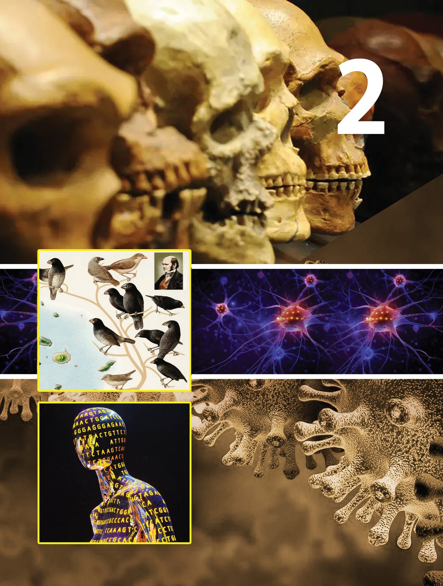
ജീവശാസ്ത്രം - X
പരിണാമത്തിന്റെ വഴികൾ
35


ജീവശാസ്ത്രം - X
കേസ് സ്റ്റഡി കടുത്ത ചുമയും കഫക്കെട്ടുമായി ആശുപത്രിയില് പ്രവേശിപ്പിച്ച ഒരു യുവാവിന്റെ നെഞ്ചിന്റെ എക്സ്റേയും ശ്വാസകോോശദ്രവവും പരി ശോോധിച്ച് ഡോോക്ടർ ക്ഷയരോോഗബാധ സ്ഥിരീകരിച്ചു. ആറാഴ്ചത്തേ ക്ക് നിരവധി ആന്റിബയോോട്ടിക്കുകളുംം തുടര്ന്ന് 33 ആഴ്ചത്തേക്ക് പ്രത്യേേക ആന്റിബയോോട്ടിക്കും നല്കി. ചികിത്സ ആരംഭിച്ച് പത്തു മാസത്തിന് ശേഷം ശ്വാസകോോശ ദ്രവത്തിന്റെ കൾച്ചറുംം നെഞ്ചിന്റെ എക്സ്റേയും പരിശോോധിച്ച് ക്ഷയരോോഗം ഭേദമായി എന്ന് ഉറപ്പാക്കി ചികിത്സ പൂർത്തിയാക്കി. രണ്ട് മാസത്തിനുശേഷം വീണ്ടും ഇതേ രോോഗലക്ഷണങ്ങ ളുമായി യുവാവിനെ ആശുപത്രിയില് പ്രവേശിപ്പിച്ചു. മുമ്പ് ചെയ്തതുപോോലെ വിവിധ ആന്റിബയോോട്ടിക്കുകൾ ഉപയോോഗിച്ച് ചികിത്സിച്ചിട്ടുംം 10 ദിവസത്തിനുശേഷം ശ്വാ സതടസ്സം മൂലം അദ്ദേഹം മരണപ്പെട്ടു. തുടർപരിശോോധന യില് ക്ഷയരോോഗാണുക്കള് വീണ്ടും സജീവമായതാണ് രോോഗകാരണമെന്ന് മനസ്സിലാക്കാനായി. ആന്റിബയോോട്ടി ക്കിനെ പ്രതിരോോധിക്കുന്ന ഈ രോോഗാണുക്കള് രോോഗിയി ലെത്തിയത് എവിടെ നിന്നാണ് എന്ന് കണ്ടെത്താൻ ഈ ബാക്ടീരിയകളിലെ DNA യെ മുമ്പ് അതേ രോോഗിയില് നിന്ന് വേര്തിരിച്ചെടുത്ത് സൂക്ഷിച്ചിരുന്ന ക്ഷയരോോഗാണു ക്കളുടെ DNA യുമായി താരതമ്യംം ചെയ്തു. ഒരു പ്രത്യേേക ജീനിന് സംഭ വിച്ച മ്യൂൂട്ടേഷനാണ് ബാക്ടീരിയകളില് ആന്റിബയോോട്ടിക്കിനോോട് പ്രതി രോോധ ശേഷി ഉണ്ടാക്കിയതെന്ന് കണ്ടെത്തി. മ്യൂൂട്ടേഷൻ സംഭവിച്ച ബാക്ടീരിയകളാണ് ആന്റിബയോോട്ടിക്കുകളുടെ സാന്നിധ്യയത്തിലും പെരുകി രോോഗം ഉണ്ടാക്കിയത്.
ആന്റിബയോോട്ടിക്കുകളെ പ്രതിരോോധിക്കാൻ ശേഷിയുള്ള ബാക്ടീരിയ കളുടെ കണ്ടെത്തലുമായി ബന്ധപ്പെട്ട് 1966 ൽ നടന്ന സംഭവകഥ വായിച്ചുവല്ലോോ. നൽകിയിരിക്കുന്ന ചോോദ്യയങ്ങൾക്ക് ചർച്ചകളിലൂടെ ഉത്തരം കണ്ടെത്തി കുറിപ്പ് തയ്യാറാക്കൂ.
36

ജീവശാസ്ത്രം - X
ആദ്യയതവണ രോോഗം ഭേദമാക്കാൻ എന്ത് ചികിത്സയാണ് നൽകി യത്? ഇതിന്റെ ഫലമെന്തായിരുന്നു? ............................................................................................................................... രണ്ടാം തവണ ചികിത്സ ലഭിച്ചിട്ടുംം രോോഗം ഭേദമാകാത്തതിന് കാരണമെന്ത്? ............................................................................................................................... ക്ഷയരോോഗ ബാക്ടീരിയക്ക് ആന്റിബയോോട്ടിക്കുകളെ പ്രതിരോോ ധിക്കാനുള്ള ശേഷി ലഭിച്ചതെങ്ങനെ? ............................................................................................................................... ഈ ശേഷി ബാക്ടീരിയകൾ അവയുടെ അടുത്ത തലമുറകളി ലേക്ക് കൈമാറിയാൽ എന്ത് സംഭവിക്കും? ............................................................................................................................... ഇത്തരം ബാക്ടീരിയകളുടെ രൂപപ്പെടൽ വൈദ്യയശാസ്ത്രമേഖലയിൽ വെല്ലുവിളികൾ ഉയർത്തുന്നുണ്ടോോ? ചുവടെ നൽകിയ പത്രവാർത്ത വിശകലനം ചെയ്ത് നിങ്ങളുടെ അഭിപ്രായം രേഖപ്പെടുത്തൂ.
ആൻ്റിമൈക്രോോബിയൽ റെസിസ്റ്റൻസ് വർധിച്ചുവരുന്ന ആഗോോള ആരോോഗ്യയ പ്രശ്നം നിലവിൽ ഏറ്റവും വിശ്വവസനീയമായ ചില ആന്റിബയോോട്ടിക്കുകൾ “സൂപ്പർബഗുകൾ” എന്ന് അറിയപ്പെടുന്ന ബാക്ടീരിയകൾക്കെതിരെ ഫലപ്രദമല്ലെന്ന് ഡോോക്ടർമാരുംം പൊൊതുജനാരോോഗ്യയവിദഗ്ധരുംം ശാസ്ത്ര ജ്ഞരുംം മുന്നറിയിപ്പ് നൽകുന്നു.
...........................................................................................................................................
സൂപ്പർബഗുകൾ (Superbugs) ആന്റിബയോോട്ടിക്കുകൾക്കെതിരെ പ്രതിരോോധശേഷിയുള്ള ബാക്ടീരിയകൾ പെരുകുകയും രോോഗങ്ങൾക്കിടയാക്കുകയും ചെയ്യുന്നു. മ്യൂൂട്ടേഷനിലൂടെ രൂപപ്പെട്ട ഈ പ്രതിരോോധശേഷി അടുത്ത തലമുറയിലേക്ക് കൈമാറ്റം ചെയ്യപ്പെടാം. കാലക്രമേണ, പ്രതിരോോധശേഷിയുള്ള ബാക്ടീരിയകളുടെ അനുപാതം വർധിക്കുകയും മറ്റനവധി മ്യൂൂട്ടേഷനുകളിലൂടെ ഒന്നിലധി കം ആന്റിബയോോട്ടിക്കുകളെ പ്രതിരോോധിക്കുന്നതിനുള്ള ശേഷി കൈവരിക്കുകയും ചെയ്യു ന്നു. ഇത് മൾട്ടി-ഡ്രഗ്-റെസിസ്റ്റൻ്റ് ഇനങ്ങളുടെ (സൂപ്പർബഗുകൾ) ആവിർഭാവത്തിലേക്ക് നയിക്കുന്നു. നിലവിലുള്ള ആന്റിബയോോട്ടിക്കുകൾ ഇവയ്ക്കെതിരെ പ്രയോോജനപ്പെടാത്തതി നാൽ ഇത്തരം ബാക്ടീരിയകളുടെ രൂപപ്പെടൽ ആരോോഗ്യയസംരക്ഷണത്തിൽ മുഖ്യയ ആശങ്ക യായി മാറുന്നു. 37
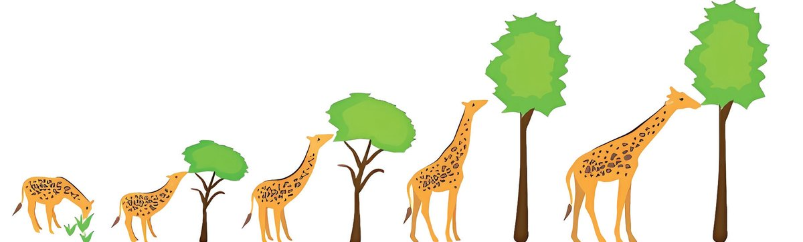

ജീവശാസ്ത്രം - X
ജീവികൾ അവയുടെ പരിസ്ഥിതിയിലെ മാറ്റങ്ങളുമായി പൊൊരുത്ത പ്പെടുകയോോ അതിജീവിക്കുകയോോ ചെയ്യുന്നു. ആദിമകോോശത്തിൽ നിന്നും ഇന്നുകാണുന്ന ജൈവവൈവിധ്യം രൂപപ്പെട്ടതിനുപിന്നിൽ ഇത്തരം നിരവധി പ്രക്രിയകൾ ഉൾപ്പെട്ടിട്ടുണ്ടാകുമല്ലോോ. ഇത്തരം പ്ര ക്രിയകളെക്കുറിച്ചുള്ള അന്വേേഷണങ്ങളാണ് പരിണാമശാസ്ത്രത്തിന് അടിത്തറയിട്ടത്. അവയെ സിദ്ധാന്ത രൂപത്തിൽ വിശദീകരിക്കുവാൻ പല ശാസ്ത്രജ്ഞർക്കും സാധിച്ചിട്ടുണ്ട്.
ലാമാർക്കിസം (സ്വവയാർജിത സ്വവഭാവങ്ങളുടെ പാരമ്പര്യയ പ്രേഷണ സിദ്ധാന്തം)
ലാമാർക്ക് 1744-1829
ജീവപരിണാമവുമായി ബന്ധപ്പെട്ട ആദ്യയകാല ചര്ച്ചകൾക്ക് തുടക്കമിട്ട ഫ്രഞ്ച് ജീവശാസ്ത്രകാരനാണ് ജീന് ബാപ്റ്റിസ്റ്റ് ലാമാര്ക്ക്. അദ്ദേഹത്തി ന്റെ ആശയങ്ങൾ ലാമാർക്കിസം എന്നറിയപ്പെടുന്നു. അദ്ദേഹം മു ന്നോോട്ടുവച്ച ആശയത്തെ സാധൂകരിക്കുന്ന ചിത്രീകരണം 2.1 സൂചക ങ്ങളുടെ അടിസ്ഥാനത്തിൽ ചർച്ചചെയ്ത് കുറിപ്പ് തയ്യാറാക്കൂ.
ഭക്ഷണദൗർലഭ്യംം കാരണം ഉയരം കൂടിയ ചില്ലകളില് നിന്നുള്ള ഇലകള്ക്കായി കഴുത്ത് നീട്ടിയതിന്റെ ഫലമായി ജിറാഫിന്റെ കഴുത്തിന് നീളം കൂടുന്നു.
നിലത്തുനിന്നുള്ള ആഹാരം സ്വീകരിക്കുന്ന നീളം കുറഞ്ഞ കഴുത്തുള്ള ജിറാഫുകള്
ചിത്രീകരണം 2.1
ആര്ജിത സ്വവഭാവങ്ങള് തലമുറകളിലൂടെ കൈമാറ്റം ചെയ്യപ്പെട്ട് നീളം കൂടിയ കഴുത്തുള്ള ജിറാഫു കളുടെ ആവിര്ഭാവം.
ലാമാർക്കിസം
സൂചകങ്ങൾ y y y
പരിസ്ഥിതിയിലെ മാറ്റം സ്വവയാർജിത സ്വവഭാവത്തിന്റെ രൂപപ്പെടൽ സ്വവയാർജിത സ്വവഭാവത്തിന്റെ പാരമ്പര്യയപ്രേഷണം
y
മാറിയ പരിസ്ഥിതിയില് നീളം കൂടിയതും നീളം കുറഞ്ഞതു മായ കഴുത്തുള്ള ജിറാഫുകളുടെ നിലനില്പ്.
സ്വവയാർജിത വ്യയതിയാനങ്ങൾ ജീവികളുടെ ജനിതകഘടനയിൽ മാറ്റം വരുത്തില്ല എന്നതിനാൽ അവ പാരമ്പര്യയമായി കൈമാറുന്നില്ല എന്ന് പിൽക്കാല ശാസ്ത്രജ്ഞർ തെളിയിച്ചു. 38
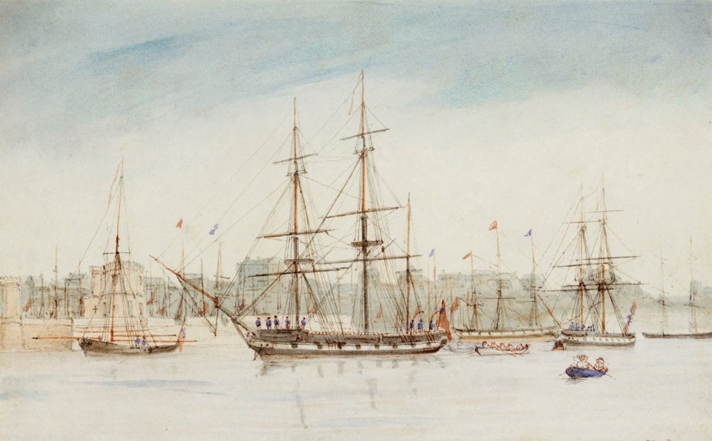

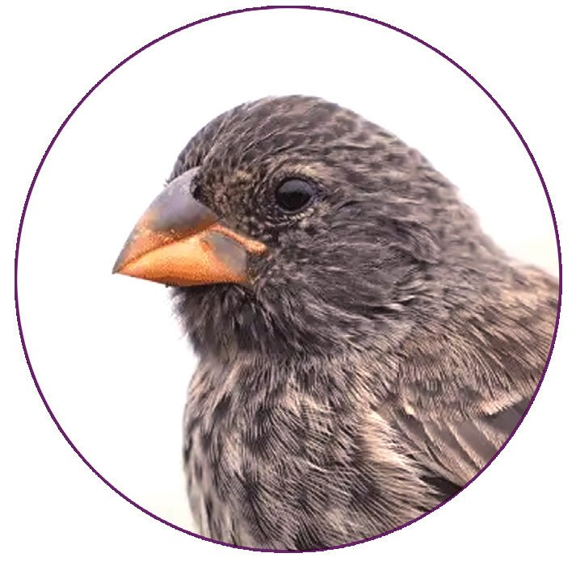
ജീവശാസ്ത്രം - X
ഡാർവിനിസം
(പ്രകൃതിനിർധാരണ സിദ്ധാന്തം) ആധുനിക പരിണാമശാസ്ത്ര വീക്ഷണ ങ്ങൾക്ക് അടിത്തറയിട്ടത് ഇംഗ്ലീഷ് പ്രകൃതിശാസ്ത്രജ്ഞനായ ചാൾസ് ഡാർവിൻ അവതരിപ്പിച്ച പ്രകൃതിനിർ ധാരണ സിദ്ധാന്തം അഥവാ ഡാർവി നിസം ആണ്.
ചാൾസ് ഡാർവിൻ (1809-1882)
HMS ബീഗിൾ
39
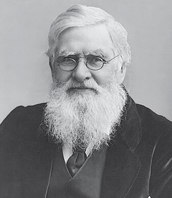
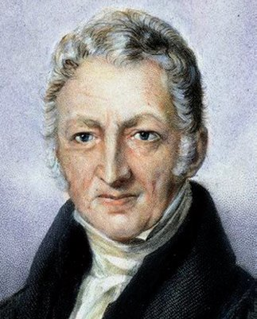
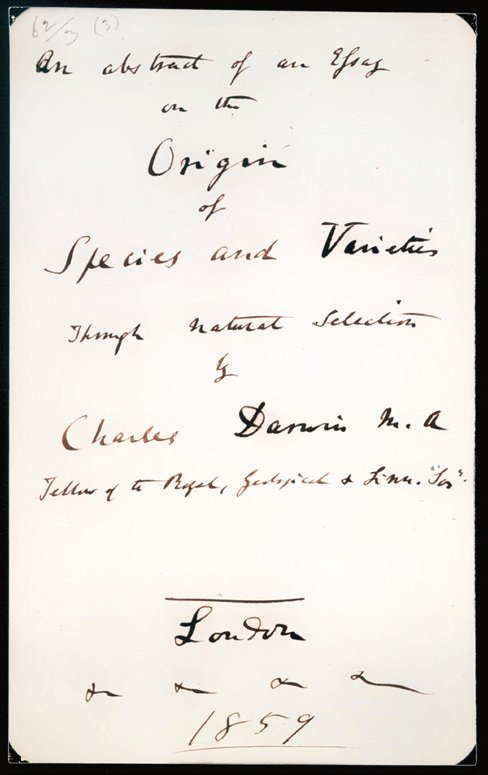
ജീവശാസ്ത്രം - X
ചാൾസ് റോോബർട്ട് ഡാർവിൻ ശാസ്ത്രജ്ഞരെ അറിയാം 1809 ഫെബ്രുവരി 12 ന് ഇംഗ്ലണ്ടിലെ ഷ്രൂസ്ബറിയിൽ നല്ല
തോോമസ് മാൽത്തൂസ് 1766-1834
ആൽഫ്രഡ് റസ്സൽ വാലസ് 1823–1913
വിദ്യാാഭ്യാാസപശ്ചാത്തലമുള്ള കുടുംംബത്തിലാണ് ചാൾസ് ഡാർവിൻ ജനിച്ചത്. ശരാശരി വിദ്യാാർഥിയായാണ് ഡാർവിൻ സ്കൂൾ വിദ്യാാഭ്യാാസം പൂർത്തിയാക്കിയത്. എന്നാൽ പ്രകൃതി പഠനത്തിൽ അതീവ താൽപര്യംം അദ്ദേഹം കാണിച്ചു. 1831ൽ, തന്റെ 22-ാം വയസ്സിൽ, HMS ബീഗിൾ എന്ന കപ്പലിൽ ഭൂപടനിർമ്മാണത്തിനായി അഞ്ചുവർഷത്തെ യാത്ര അദ്ദേഹം ആരംഭിച്ചു. ഈ യാത്രയിൽ, ഡാർവിൻ തെക്കേ അമേരിക്ക, ഓസ്ട്രേലിയ, ഗാലപ്പഗോോസ് ദ്വീപുകൾ തുടങ്ങിയ പ്രദേശ ങ്ങൾ പര്യയവേഷണം ചെയ്തു. അവിടങ്ങളിലെ സസ്യയങ്ങളുടെ യും ജന്തുക്കളുടെയും വൈവിധ്യം അദ്ദേഹം സൂക്ഷ്മമായി നിരീക്ഷിക്കുകയും രേഖപ്പെടുത്തുകയും ചെയ്തു. 1836-ൽ ഇംഗ്ലണ്ടിലേക്ക് മടങ്ങിയ ഡാർവിൻ അദ്ദേഹം ശേഖരിച്ച വസ്തു ക്കളുംം നിരീക്ഷണക്കുറിപ്പുകളുംം വിശകലനം ചെയ്യുകയും മറ്റ് ശാസ്ത്രജ്ഞരുമായി കത്തിടപാടുകൾ നടത്തി ആഴത്തിൽ പഠി ക്കുകയും ചെയ്തു. ഇംഗ്ലീഷ് സാമ്പത്തിക ശാസ്ത്രജ്ഞനും ജനസംഖ്യാശാസ്ത്രജ്ഞനു മായിരുന്ന തോോമസ് മാൽത്തൂസ് മനുഷ്യയജനസംഖ്യയ അതിവേ ഗത്തിൽ വർധിക്കുമ്പോോൾ ഭക്ഷ്യയ ഉൽപാദനം അതിനനുസരി ച്ച് വർധിക്കില്ലെന്നും ഇത് ദാരിദ്ര്യംം, രോോഗം, യുദ്ധം തുടങ്ങിയ പ്രശ്നങ്ങൾക്ക് കാരണമാകുമെന്നും വാദിച്ചു. മാൽത്തൂസിന്റെ ഈ ചിന്ത ഡാർവിനെയും ഏറെ സ്വാധീനിച്ചിരുന്നു. ഡാർവിൻ തൻ്റെ പഠനങ്ങൾ തുടരവേ, 1858-ൽ ബ്രിട്ടീഷ് പ്രകൃ തിശാസ്ത്രജ്ഞനായ ആൽഫ്രഡ് റസ്സൽ വാലസിന്റെ പരിണാമ പഠനങ്ങളുംം ശ്രദ്ധയിൽപ്പെട്ടു. ഡാർവിൻ്റെയും വാലസിൻ്റെയും പ്രബന്ധങ്ങൾ ശാസ്ത്രസമ്മേളനത്തിൽ അവതരിപ്പിക്കപ്പെട്ടു. 1859-ൽ 'ഓൺ ദി ഒറിജിൻ ഓഫ് സ്പീഷീസ് ' എന്ന പുസ്തക ത്തിലൂടെ ഡാർവിൻ തൻ്റെ ആശയങ്ങൾ വിപുലീകരിച്ച് അവ തരിപ്പിച്ചു. തുടക്കത്തിൽ അദ്ദേഹത്തിന്റെ നിരീക്ഷണങ്ങളെ അന്നത്തെ സമൂഹം എതിർത്തെങ്കിലും കൂടുതൽ തെളിവുകൾ പുറത്തുവന്നതോോടെ ഡാർവിൻ്റെ പരിണാമസിദ്ധാന്തത്തിന് വ്യാപകമായ സ്വീകാര്യയത ലഭിച്ചു. ഡാർവിൻ്റെ പരിണാമസിദ്ധാന്തം ലോോകത്തെ ഏറെ സ്വാധീനിച്ച ശാസ്ത്രാശയങ്ങളിലൊൊന്നാണ്. ജീവശാസ്ത്രത്തിനപ്പുറം വൈദ്യയശാസ്ത്രം, കൃഷി, പരിസ്ഥിതിശാസ്ത്രം തുടങ്ങിയ മേഖലകളിലെല്ലാം ഈ സിദ്ധാ ന്തത്തിന് പ്രയോോഗസാധ്യയതകളുണ്ട്. 40
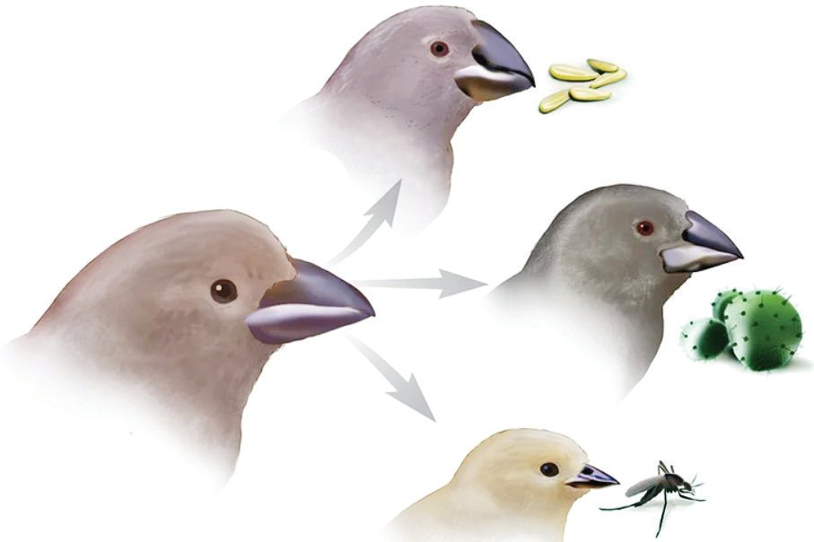
ജീവശാസ്ത്രം - X
പരിണാമാശയം ആവിഷ്കരിക്കുന്നതിന് ചാൾസ് ഡാർവിനെ സ്വാ ധീനിച്ചത് ഗാലപ്പഗോോസ് ദ്വീപുകളിലെ കുരുവികളുടെ കൊൊക്കിന്റെ (Beak) വൈവിധ്യയമാണ്. ചിത്രീകരണം 2.2 സൂചകങ്ങളെ ആസ്പദമാ ക്കി വിശകലനം ചെയ്ത് കുറിപ്പ് തയ്യാറാക്കൂ. വിത്തുതീനി കുരുവി
കള്ളിമുൾച്ചെടി ഭക്ഷണമാക്കുന്നവ
പൂർവിക കുരുവി പ്രാണികളെ ഭക്ഷണമാക്കുന്നവ ചിത്രീകരണം
2.2
ഗാലപ്പഗോോസ് കുരുവികൾ
ഗാലപ്പഗോോസ് ദ്വീപസമൂഹത്തിൽ പതിനാലോോളം വ്യയത്യയസ്ത സ്പീ ഷീസുകളിൽപ്പെട്ട കുരുവികളുണ്ട്. നിലത്ത് വസിച്ച് വിത്ത് കഴിക്കുന്നവ (Ground finch), കള്ളിമുൾച്ചെടിയിൽ വസിച്ച് വിത്ത് ഭക്ഷിക്കുന്നവ (Cactus finch), മരത്തിൽ വസിച്ച് പ്രാ ണികളെ ഭക്ഷിക്കുന്നവ (Tree finch) തുടങ്ങിയവ അവയിൽ ചിലതാണ്. ഈ സ്പീഷീസുകൾ പൊൊതുവായി കാണിക്കുന്ന മുഖ്യയവ്യയത്യാസം അവയുടെ കൊൊക്കിന്റെ ആകൃതിയും വലുപ്പ വുമാണ്. ഇടത്തരം വലുപ്പമുള്ള വിത്തുകൾ കഴിക്കുന്ന കുരു വികളുടെ കൊൊക്കുകൾ വലിയ വിത്തുകൾ കഴിക്കുന്ന കുരുവി കളിൽ നിന്നും പ്രാണികളെ തിന്നുന്ന കുരുവികളിൽ നിന്നും വ്യയത്യയസ്തമാണ്. കൊൊക്കുകൾ അവയുടെ ഭക്ഷണസമ്പാദനത്തി നുള്ള പ്രധാന ഉപാധിയാണ്. പരിസ്ഥിതിയിലെ ഭക്ഷ്യയസ്രോോത സ്സുകളുടെ ലഭ്യയതക്കനുസരിച്ച് അനുയോോജ്യയമായ ആകൃതിയോോ വലുപ്പമോോ ഉള്ള കൊൊക്കുള്ള കുരുവികൾ അതിജീവിക്കുകയും കൂടുതൽ തലമുറകളെ ഉൽപാദിപ്പിക്കുകയും ചെയ്യും.
സൂചകങ്ങൾ y കുരുവികളുടെ കൊൊക്കിന്റെ വൈവിധ്യം y വൈവിധ്യയത്തിന് കാരണം y വൈവിധ്യം അതിജീവനത്തെ സ്വാധീനിക്കുന്ന വിധം 41
ജീവശാസ്ത്രം - X
പരിസ്ഥിതിക്കനുഗുണമായ ചില സവിശേഷതകൾ ഉള്ള ജീവികൾ അതിജീവിക്കുകയും പ്രത്യുൽപാദനം നടത്തുകയും കൂടുതൽ സന്താ നങ്ങളെ ഉൽപാദിപ്പിക്കുകയും ചെയ്യുന്നതായി മനസ്സിലാക്കിയില്ലേ? ഇവ പിൽക്കാലത്ത് പുതിയ ജീവിവർഗങ്ങളായി മാറുന്നതെങ്ങനെ യെന്ന് ഡാർവിൻ വിശദീകരിച്ചിരിക്കുന്നത് വിശകലനം ചെയ്ത് നിഗമ നങ്ങൾ രേഖപ്പെടുത്തൂ.
അമിതോോൽപാദനം പരിസ്ഥിതിക്ക് നിലനിർത്താൻ കഴിയുന്നതിനേക്കാൾ കൂടുതൽ സന്താനങ്ങളെ ജീവികൾ ഉൽപാദിപ്പിക്കുന്നു.
വ്യയതിയാനങ്ങൾ വലുപ്പം, രോോഗപ്രതിരോോധം, വിത്തുൽപാദനം പോോലുള്ള മിക്ക സവി ശേഷതകളിലും ജീവികൾ പരസ്പരം വ്യയത്യാസങ്ങൾ കാണിക്കും. ഈ വ്യയത്യാസങ്ങൾ (വ്യയതിയാനങ്ങൾ, Variations) ജീവികൾക്ക് ഗുണകര മോോ ദോോഷകരമോോ ആകാം.
നിലനിൽപിനുവേണ്ടിയുള്ള മത്സരം ഭക്ഷണം, സ്ഥലം, ഇണകൾ തുടങ്ങിയ പരിമിതമായ വിഭവങ്ങൾ ജീവികൾ തമ്മിലുള്ള മത്സരത്തിലേക്ക് നയിക്കുന്നു.
അർഹതയുള്ളവരുടെ അതിജീവിക്കൽ അനുകൂല വ്യയതിയാനങ്ങളുള്ള ജീവികൾ നിലനിൽപിനായുള്ള മത്സ രത്തെ അതിജീവിക്കുന്നു. അവ കൂടുതൽ ഫലപ്രദമായി പ്രത്യുൽ പാദനം നടത്തുകയും പുതിയ തലമുറയെ ഉൽപാദിപ്പിക്കുകയും ചെയ്യുന്നു.
പ്രകൃതിനിർധാരണം അനുകൂല വ്യയതിയാനങ്ങൾ വരുംംതലമുറകളിലേക്ക് കൈമാറുന്നു. കൂടുതൽ വ്യയതിയാനങ്ങൾ തലമുറ തലമുറകളായി കുമിഞ്ഞുകൂടി പരസ്പരം പ്രത്യുൽപാദന സാധ്യയതയില്ലാത്ത ജീവികളുണ്ടാവുന്നു. അവ പുതിയ ജീവിവർഗമായി (Species) മാറുന്നു.
42


ജീവശാസ്ത്രം - X
നമുക്ക് കണ്ടെത്താം ഒരു സസ്യം നൂറുകണക്കിന് വിത്തുകളെ ഉൽപാദിപ്പിക്കുന്നു. എങ്കിലും ചിലതുമാത്രമേ പൂർണ്ണവളർച്ചയെത്തുകയുള്ളൂ. ഈ സസ്യയത്തിൽ നിന്ന് ദശലക്ഷക്കണക്കിനുവർഷങ്ങൾക്കുശേഷം പുതിയൊൊരു സസ്യയസ്പീഷീസ് രൂപപ്പെടാനിടയുള്ള സാഹചര്യയങ്ങൾ എന്തായിരിക്കും? പ്രകൃതിനിർധാരണ സിദ്ധാന്തത്തെ ആസ്പദമാക്കി കുറിപ്പ് തയ്യാറാക്കൂ.
ഭൂമിയിലെ മഹത്തായ ദൃശ്യയവിസ്മയം 1973 മുതൽ 2012 വരെ, റോോസ്മേരി, പീറ്റർ ഗ്രാന്റ് എന്നീ
ശാസ്ത്രജ്ഞർ ഗാലപ്പഗോോസ് ദ്വീപുകളിൽ ഡാർവിന്റെ കുരു വികളെക്കുറിച്ച് കൂടുതൽ പഠനങ്ങൾ നടത്തി. വരൾച്ച, ഭക്ഷ്യയലഭ്യയതയിലെ വ്യയത്യാസങ്ങൾ എന്നിവ പോോലുള്ള പാ രിസ്ഥിതിക സമ്മർദങ്ങളാൽ കുരുവികളുടെ കൊൊക്കിൻ്റെ വലുപ്പം, ആഴം, ആകൃതി എന്നിവയിലുണ്ടായ ഘാടനാ പരമായ മാറ്റങ്ങൾ അവർ നിരീക്ഷിച്ചു. ഡിഎൻഎ സീ ക്വവൻസിങ് സാങ്കേതികവിദ്യയ ഉപയോോഗിച്ച്, കൊൊക്കിൻ്റെ ആഴത്തെയും ബലത്തെയും സ്വാധീനിക്കുന്ന BMP4 ജീനിനെയും കൊൊക്കിൻ്റെ ആകൃതിയെ നിർണ്ണയിക്കുന്ന ALX1 ജീനിനെയും അവർ തിരിച്ചറിഞ്ഞു. കാലക്രമേണ, ഈ ജനിതക വ്യയതിയാനങ്ങൾ വ്യയതിരിക്തമായ കൊൊക്കു കളുള്ള കുരുവികളെ ഗാലപ്പഗോോസിലെ വ്യയത്യയസ്ത പാരി സ്ഥിതിക സ്വവഭാവമുള്ള ദ്വീപുകളിൽ രൂപപ്പെടുത്തി എന്ന നിഗമനത്തിൽ അവർ എത്തിച്ചേർന്നു. ഈ ഗവേഷണം ജനിതകശാസ്ത്രം, ശരീരഘടനാശാസ്ത്രം, തന്മാത്രാജീവശാ സ്ത്രം എന്നീ പഠനങ്ങളിലൂടെ പരിണാമത്തിന് നേരിട്ടുള്ള തെളിവുകൾ നൽകി. പരിണാമത്തെ ഭൂമിയിലെ മഹത്തായ ദൃശ്യയവിസ്മയം എന്നുവിളിക്കാ റുണ്ട്. സ്കൂൾ ലൈബ്രറിയിൽ നിന്നും മറ്റ് സ്രോോതസുകളിൽ നിന്നും പരിണാമസംബന്ധിയായ പുസ്തകങ്ങൾ തിരഞ്ഞെടുത്ത് ക്ലാസ് തല ത്തിൽ ഒരു പ്രദർശനം സംഘടിപ്പിക്കൂ. നീണ്ട കഴുത്തുള്ള ജിറാഫുകളുടെ പരിണാമം നടന്നത് എപ്രകാരമാ യിരിക്കും? ചിത്രീകരണം 2.3 നിരീക്ഷിച്ച് ലാമാർക്കിസം, ഡാർവിനി സം എന്നീ ആശയങ്ങൾ താരതമ്യയപ്പെടുത്തി കുറിപ്പ് തയ്യാറാക്കൂ. 43

ജീവശാസ്ത്രം - X
ലാമാര്ക്കിസം
ഡാര്വിനിസം
ആദ്യയകാല ജിറാഫുകള്ക്ക് നീളം കുറഞ്ഞ കഴുത്താണ് ഉണ്ടായിരു ന്നത്.
വ്യയത്യയസ്ത നീളത്തോോടുകൂടിയ കഴു ത്തുള്ള ജിറാഫുകള്
ആഹാരം ലഭിക്കുന്നതിനായി ജിറാ ഫുകള് അവയുടെ കഴുത്ത് നീട്ടാന് തുടങ്ങി.
ആഹാരത്തിനായുള്ള മത്സരത്തില് കഴുത്തിന് നീളം കൂടിയ ജിറാഫു കള് മാത്രം അതിജീവിക്കുന്നു.
നിരന്തരമായ ഉപയോോഗത്തിലൂടെ കഴുത്തിന് നീളം കൂടിയ ജിറാഫു കള് രൂപപ്പെട്ടു.
കഴുത്തിന് നീളം കൂടിയ ജിറാഫു കള് മാത്രം നിലനില്ക്കുകയും പുതിയ ജീവിവര്ഗമായി മാറുക യും ചെയ്യുന്നു. ജീവികളിലെ അനുകൂല വ്യയതിയാനങ്ങളെ പരിസ്ഥിതി തിരഞ്ഞെടുക്കുന്നു.
പരിസ്ഥിതി ജീവികളിൽ വ്യയതിയാനങ്ങൾക്ക് കാരണമാകുന്നു.
ചിത്രീകരണം 2.3 ലാമാർക്കിസം- ഡാർവിനിസം താരതമ്യംം 44

ജീവശാസ്ത്രം - X
ലാമാർക്കിസം, ഡാർവിനിസം എന്നിവയുടെ താരതമ്യയപഠനം അധികവിവരം ശേഖരിച്ച് കൂടുതൽ വസ്തുതകൾ ഉൾപ്പെടു ത്തി ഒരു പ്രസന്റേഷൻ തയ്യാറാക്കി ക്ലാസിൽ അവതരിപ്പിക്കൂ. ജീവിവർഗങ്ങളുടെ ഉൽപത്തിയുമായി ബന്ധപ്പെട്ട ഡാർവിന്റെ സിദ്ധാ ന്തത്തിൽ പരിമിതികളുണ്ടായിരുന്നോോ? ഈ പരിമിതികള് ഡാര്വിനി സത്തിന് വെല്ലുവിളിയുണ്ടാക്കിയോോ? ചുവടെ നൽകിയ വിവരണം വിശകലനം ചെയ്ത് നിഗമനങ്ങൾ രൂപീകരിക്കൂ.
നിയോോഡാർവിനിസം (Neo Darwinism) വ്യയതിയാനത്തിൻ്റെയും പാരമ്പര്യയപ്രേഷണത്തിൻ്റെയും ജനിതക അടി ത്തറയെക്കുറിച്ച് ചാൾസ് ഡാർവിന് ധാരണയില്ലായിരുന്നതിനാൽ ഡാർവിന്റെ പരിണാമാശയവും വിമർശനങ്ങൾക്ക് വിധേയമായിട്ടു ണ്ട്. എന്നാൽ ഗ്രിഗർ മെൻഡലിൻ്റെ കണ്ടെത്തലുകളുംം ക്രോോമസോോ മുകളെയും ജീനുകളെയും കുറിച്ചുള്ള ധാരണകളുംം വന്നതോോടെ പരിണാമത്തിനിടയാക്കുന്ന വ്യയതിയാനങ്ങൾക്ക് കാരണം ജനിത കമാറ്റങ്ങൾ, ലൈംംഗിക പ്രത്യുൽപാദന സമയത്തെ ജനിതകപുനഃഃ സംയോോജനം, ജീൻ പ്രവാഹം എന്നിവയാണെന്ന് തിരിച്ചറിഞ്ഞു. പോോപ്പുലേഷൻ ജനറ്റിക്സ്, പാലിയൻ്റോോളജി, പരിസ്ഥിതിശാസ്ത്രം തുടങ്ങിയ മേഖലകളിൽ നിന്നുള്ള തെളിവുകളുംം തുടർപഠനങ്ങളുംം ഡാർവിനിസത്തോോട് കൂട്ടിച്ചേർത്ത് നിയോോഡാർവിനിസം രൂപപ്പെ ടുത്തിയതോോടെ വിമർശനങ്ങൾക്കിടയില്ലാത്ത വിധം ഡാർവിനിസം യുക്തിഭദ്രമായി. ജീവപരിണാമവുമായി ബന്ധപ്പെട്ട് നിരവധി ആധുനിക ഗവേഷണ ങ്ങൾ നടക്കുന്നുണ്ട്. ഇവൊൊല്യൂഷണറി ക്ലിനിക്കൽ മെഡിസിനിൽ ആരോോഗ്യയ സംരക്ഷണത്തിന് പരിണാമാശയങ്ങൾ ഉപയോോഗിക്കുന്നു. ഉദാഹരണത്തിന്, ബാക്ടീരിയകളോോ വൈറസുകളോോ കാലക്രമേണ മരുന്നുകളെ പ്രതിരോോധിക്കുന്ന തരത്തിൽ പരിണമിക്കുന്നതെങ്ങനെ യെന്ന് പഠിക്കുന്നു. ഇതിലൂടെ പുതിയ ചികിത്സാമാർഗങ്ങൾ സൃഷ്ടി ക്കുന്നതിനോോ നിലവിലുള്ളവ കൂടുതൽ മെച്ചപ്പെടുത്തുന്നതിനോോ കഴിയുന്നു. ഒരു വ്യയക്തിയുടെ ജീനുകളുംം കുടുംംബത്തിന്റെ ജനിതക ചരിത്രവും പരിശോോധിച്ച് പേഴ്സണലൈസ്ഡ് മെഡിസിൻ രൂപകൽ പന ചെയ്യുന്നു. DNA പഠനങ്ങളുംം ആർട്ടിഫിഷ്യയൽ ഇൻ്റലിജൻസും രോോഗങ്ങളെ മനസ്സിലാക്കാനും അവയെ ചെറുക്കാനുമുള്ള പുതിയ വഴികൾ കണ്ടെത്താനും ഡോോക്ടർമാരെ സഹായിക്കുന്നു. പരിണാമവൃക്ഷം (Evolutionary tree) എന്ന ആശയത്തെക്കുറിച്ച് മന സ്സിലാക്കിയിട്ടുണ്ടല്ലോോ? ഓരോോ ജീവിവിഭാഗവും എങ്ങനെയാണ് രൂപ പ്പെടുന്നതെന്ന് ചുവടെ നൽകിയ ചിത്രീകരണം 2.4, വിവരണം എന്നിവ സൂചകങ്ങളെ അടിസ്ഥാനമാക്കി വിശകലനം ചെയ്ത് നിഗമന ങ്ങൾ രൂപീകരിക്കൂ. 45
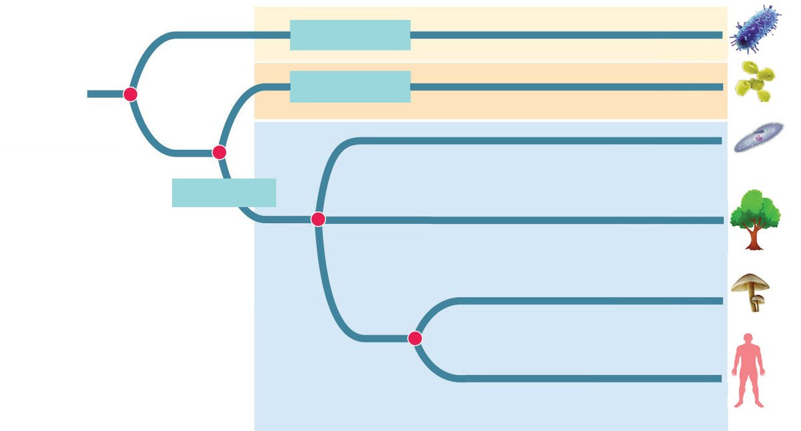
ജീവശാസ്ത്രം - X
ബാക്ടീരിയ ആർക്കിയ
ബാക്ടീരിയ ആർക്കിയ പ്രോോട്ടിസ്റ്റ
യൂക്കാരിയ പ്ലാന്റേ
ആർക്കിയയും യൂക്കാരിയയും ബാക്ടീരിയകൾ പങ്കിടാത്ത ഒരു പൊൊതു പൂർവികനെ പങ്കിടുന്നു. പ്രോോട്ടിസ്റ്റ, സസ്യയങ്ങൾ, ഫംഗസ്, ജന്തുക്കൾ എന്നിവ ഒരു പൊൊതു പൂർവികനിൽ നിന്നാണ് രൂപപ്പെടുന്നത്.
LUCA
ഫംജൈ അനിമേലിയ
MRCA ചിത്രീകരണം 2.4 വിവിധ ജീവിവിഭാഗങ്ങളുടെ പരിണാമം ഒരു പൊൊതു പൂർവിക സ്പീഷീസിൽ നിന്ന് പുതിയ സ്പീഷീസുകൾ ഉണ്ടാകുന്ന സ്പീസിയേഷൻ (Speciation) എന്ന പ്രക്രിയയിലൂടെയാണ് ഭൂമിയിൽ ജൈവവൈവിധ്യം രൂപപ്പെട്ടത്. സ്പീഷീസുകളെല്ലാം അവസാ നത്തെ സാർവത്രിക പൊൊതുപൂർവികരിൽ (LUCA - Last Universal Common Ancestor) നിന്ന് രൂപപ്പെട്ടതായും വ്യയത്യയസ്ത സ്പീഷീസുകൾക്ക് ഏറ്റവും അടുത്ത പൊൊതു പൂർവ്വികർ (MRCA - Most Recent Common ancestor) ഉണ്ടാകാമെന്നും കണക്കാക്കപ്പെടുന്നു.
ഒരു ജീവിഗണത്തിലെ അംഗങ്ങൾക്ക് പ്രത്യുൽപാദനത്തിലൂടെ വ്യയതിയാനങ്ങളുള്ള സന്താനങ്ങളെ ഉൽപാദിപ്പിക്കാമെങ്കിലും അവ ഒറ്റ സ്പീഷീസായിത്തന്നെ തുടരുംം.
സ്പീസിയേഷൻ
ജീവിഗണത്തിലെ അംഗങ്ങളെ പാരിസ്ഥിതിക ഘടകങ്ങളോോ മറ്റോോ (മ്യൂൂട്ടേഷൻ, പ്രകൃതിനിർധാരണം, ജനിതക പുനഃഃസംയോോജനം മുത ലായവ) പരസ്പരം വേർപെടുത്തിയാൽ, കാലക്രമേണ നിരവധി വ്യയ തിയാനങ്ങൾ കുമിഞ്ഞു കൂടിയേക്കാം. ജീവിഗണത്തിലെ അംഗങ്ങള്ക്ക് പരസ്പരം പ്രത്യുൽപാദനം നടത്തി പ്രത്യുൽപാദനക്ഷമമായ സന്താനങ്ങളെ രൂപപ്പെടുത്താൻ കഴിയാ ത്ത അവസ്ഥയുണ്ടാകുന്നതോോടെ ഇവ വ്യയത്യയസ്ത സ്പീഷീസുകളായി പരിണമിക്കുന്നു. 46

ജീവശാസ്ത്രം - X
സൂചകങ്ങൾ y LUCA, MRCA ഇവയെ താരതമ്യംം ചെയ്യുക. y ഫംഗസുകളോോട് ഏറ്റവും അടുത്ത ജീവിവിഭാഗമേത്? എന്തുകൊൊണ്ട്? y ജീവികളിൽ വ്യയതിയാനങ്ങൾ രൂപപ്പെടുന്നതിന് കാരണമാകുന്ന സാഹചര്യയങ്ങൾ ഏതെല്ലാം? y ഈ സാഹചര്യയങ്ങൾ സ്പീഷീസുകളുടെ രൂപപ്പെടലിന് കാരണമാ കുന്നതെങ്ങനെ?
പരിണാമത്തിന്റെ തെളിവുകള് (Evidences of Evolution)
ജീവപരിണാമത്തിന് ഉപോോല്ബലകമായ തെളിവുകൾ അനവധി യാണ്. ജീവികളിലെ തന്മാത്രകളുടെ താരതമ്യയപഠനം മുതൽ ഭൂമി യിലെ ജീവികളുടെ വിന്യാസം വരെയുള്ള പഠനം ജീവികള് തമ്മിലു ള്ള പരസ്പരബന്ധം മനസ്സിലാക്കാന് നമ്മെ സഹായിക്കുന്നു.
തന്മാത്രാജീവശാസ്ത്രം (Molecular Biology) ഒരു ജീവിയിലെ DNA യിലെ ന്യൂക്ലിയോോടൈഡുകളുടെ ക്രമവും പ്രോോ ട്ടീനുകളിലെ അമിനോോ ആസിഡുകളുടെ ക്രമവും മറ്റു ജീവികളുടേതു മായി താരതമ്യംം ചെയ്യുന്നതിലൂടെ ജീവികളുടെ പരിണാമപരമായ ബന്ധം കണ്ടെത്താനാകും. ശ്വവസനവർണ്ണകമായ ഹീമോോഗ്ലോോബിനിലെ പ്രോോട്ടീൻ തന്മാത്രയാണ് ഗ്ലോോബിൻ എന്ന് നിങ്ങൾക്കറിയാമല്ലോോ. മനു ഷ്യയരിലെ ഗ്ലോോബിൻ തന്മാത്രയിലെ ബീറ്റാ ശൃംഖലയിലെ അമിനോോ ആസിഡുകളുടെ ക്രമീകരണം മറ്റ് ജീവികളുടേതുമായി താരതമ്യയപ്പെ ടുത്തിയിരിക്കുന്ന പട്ടിക 2.1 സൂചകങ്ങളുടെ അടിസ്ഥാനത്തിൽ വി ശകലനം ചെയ്ത് നിഗമനങ്ങൾ രൂപീകരിക്കൂ. ജീവി
ബീറ്റാശൃംഖലയിലെ അമിനോോ ആസിഡുകളിൽ മനുഷ്യയരുമായുള്ള വ്യയത്യാസങ്ങളുടെ എണ്ണം
ചിമ്പാൻസി
0
ഗൊൊറില്ല
1
എലി
31
പട്ടിക
2.1
ബീറ്റാ ശൃംഖല
ആൽഫാ ശൃംഖല
തന്മാത്രാജീവശാസ്ത്രം നൽകുന്ന തെളിവ് 47
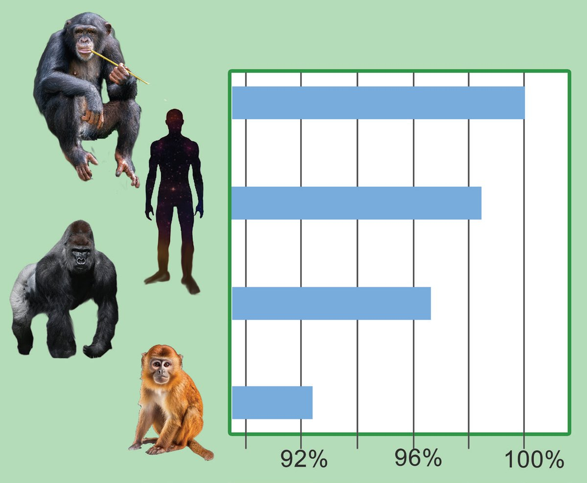

ജീവശാസ്ത്രം - X
സൂചകങ്ങൾ y മനുഷ്യയരുമായി പരിണാമപരമായ ബന്ധം ഏറ്റവും കൂടുതലുള്ള ജീവിയേത്? എന്തുകൊൊണ്ട്? y മനുഷ്യയരുമായി വിദൂരമായ ജീവിയേത്? എന്തുകൊൊണ്ട്?
പരിണാമബന്ധം
പുലർത്തുന്ന
y ജീവികൾ തമ്മിലുള്ള പരിണാമപരമായ ബന്ധം കണ്ടെത്തുന്നതിന് തന്മാത്രാജീവശാസ്ത്രം എപ്രകാരം സഹായിക്കുന്നു? തന്മാത്രാതലത്തിലുള്ള സാമ്യയവ്യയത്യാസങ്ങളെ ശരീരഘടനാ താരത മ്യംം, ഫോോസിൽ പഠനം എന്നിവയിൽ നിന്നുള്ള അറിവുകളുമായി ബന്ധിപ്പിച്ചാണ് പരിണാമവൃക്ഷം ചിത്രീകരിക്കുന്നത്. പരിണാമചരിത്രം മനസ്സിലാക്കുന്നതിനുള്ള ഏറ്റവും ആധുനിക മാർഗമാണിത്.
നമുക്ക് കണ്ടെത്താം ചിത്രീകരണം 2.5 വിശകലനം ചെയ്ത് DNA താരതമ്യയപഠനം നൽകുന്ന നിഗമനങ്ങൾ രേഖപ്പെടുത്തൂ. ചിമ്പാൻസിയുടെ DNA ശ്രേണി മറ്റുള്ള ജീവികളുടെ DNA ശ്രേണിയുമായുള്ള പൊൊരുത്തപ്പെടല് ശതമാനത്തില്
ചിമ്പാൻസി
മനുഷ്യയൻ
ഗൊൊറില്ല
കുരങ്ങ്
ചിത്രീകരണം 2.5 DNA ശ്രേണിയുടെ താരതമ്യംം 48
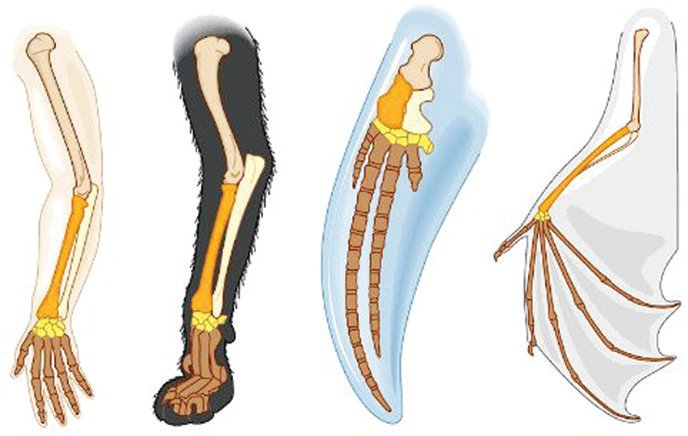
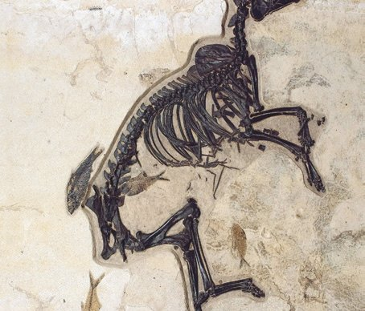
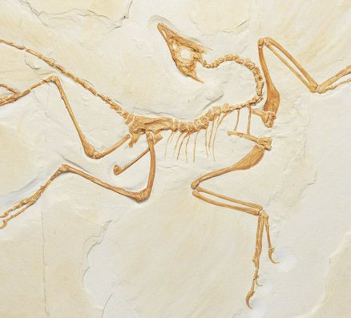
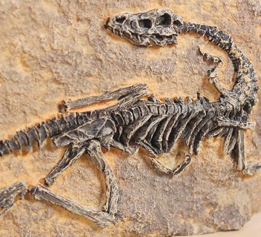
ജീവശാസ്ത്രം - X
ആന്തരഘടനയിലെ താരതമ്യംം ജീവികളുടെ ആന്തരഘടന താരതമ്യംം ചെയ്ത് പഠിക്കുന്നത് പരിണാമ ത്തിന് ശക്തമായ തെളിവുകൾ നൽകുന്നു. ചുവടെ നല്കിയിട്ടുള്ള ചിത്രീകരണം 2.6, വിവരണം എന്നിവ വിശ കലനം ചെയ്ത് വ്യയത്യയസ്ത ജീവികളുടെ ആന്തരഘടനയിലെ സമാനത കള് ജീവപരിണാമത്തെ സാധൂകരിക്കുന്നതെങ്ങനെയെന്ന് കണ്ടെ ത്തി കുറിപ്പ് തയ്യാറാക്കൂ. മനുഷ്യയന്റെ കൈ, പൂച്ചയുടെ മുൻകാലുകൾ, തിമിംംഗലത്തിന്റെ ഫ്ലിപ്പര്, വവ്വാലിന്റെ ചിറക്, എന്നിവയിലെ അസ്ഥികൾ സമാനമാണ്. എന്നാൽ ഈ അവയവങ്ങൾ അവയുടെ ബാഹ്യയഘടനയിലും പ്രവർത്തനത്തിലും വ്യയത്യയസ്തത പുലർത്തുന്നു. മനുഷ്യയൻ
പൂച്ച
ചിത്രീകരണം
തിമിംംഗലം
2.6
വവ്വാൽ
ആന്തരഘടനയും പരിണാമപരമായ ബന്ധവും
ഫോോസിൽ തെളിവുകൾ പുരാതനകാലത്തെ ജീവികളുടെ അവശിഷ്ടങ്ങളോോ അടയാളങ്ങളോോ ആണ് ഫോോസിലുകള്. ചുവടെ നല്കിയിട്ടുള്ള ചിത്രീകരണം 2.7 വി ശകലനം ചെയ്ത് ഫോോസിലുകള് ജീവപരിണാമപ്രക്രിയ മനസ്സിലാ ക്കാൻ സഹായിക്കുന്നതെങ്ങനെയെന്ന് കുറിപ്പ് തയ്യാറാക്കൂ.
ജീവപരിണാമം ഒരു ക്രമാനുഗത പ്രക്രിയയാണ്. ഉദാ: കുതിരകളുടെ പൂർവികരുടെ കാലുകള് ഇന്നത്തെ കുതിരകളുടേതിനേക്കാള് ചെറുതായിരുന്നു.
ചിത്രീകരണം
2.7
ഇടനില ഫോോസിലുകള് ജീവികള് തമ്മിലുള്ള പരി ണാമപരമായ ബന്ധം തെളിയിക്കുന്നു. ഉദാ: ഉരഗം, പക്ഷി എന്നിവയുടെ സ്വവഭാവ ങ്ങളോോട് കൂടിയ ആര്ക്കിയോോപ്ടെറിക്സ്
ഫോോസിലുകൾ നൽകുന്ന തെളിവ് 49
ഭൂമിയിൽ മുമ്പ് ജീവിച്ചിരുന്ന നിരവധി ജീവികൾക്ക് വംശനാശം സംഭവിച്ചിട്ടുള്ളതായി തെളിയിക്കപ്പെട്ടിട്ടുണ്ട്. ഉദാ: ദിനോോസറുകൾ, മാമത്തുകൾ


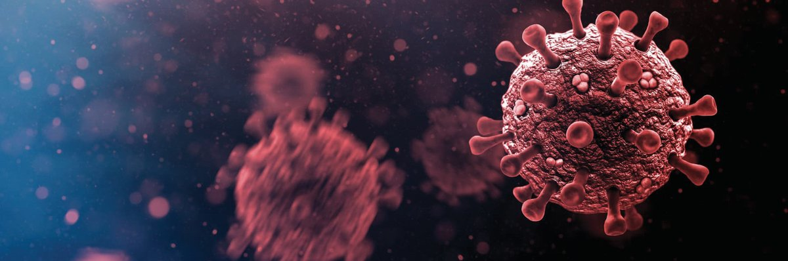


ജീവശാസ്ത്രം - X
പരിണാമം - ഒരു തുടര് പ്രക്രിയ മിക്ക വൈറസുകളുടെയും ജനിതകവസ്തു RNA ആണ്. DNA യെ അപേക്ഷിച്ച് RNA ക്ക് മ്യൂൂട്ടേഷനുകള് സംഭവിക്കാൻ കൂടുതൽ സാധ്യയതയുള്ളതിനാൽ RNA വൈറസുകൾ വേഗത്തിൽ പരിണമിക്കും. വൈറസുകളുടെ പരിണാമത്തിൽ മ്യൂൂട്ടേഷനുകൾ നിർണ്ണായ കമായ പങ്ക് വഹിക്കുന്നു. ചില മ്യൂൂട്ടേഷനുകള് വൈറസുകള്ക്ക് അവയുടെ ആതിഥേയ കോോശത്തിന്റെ പ്രതിരോോധ സംവിധാനത്തെ മറികടക്കാനോോ ആന്റിവൈറല് മരുന്നുകളോോട് പ്രതിരോോധിക്കാനോോ ഉള്ള ശേഷി നല്കുന്നു. ഇത് ആതിഥേയകോോശത്തെ കൂടുതൽ ഫലപ്രദമായി ഉപയോോഗപ്പെടുത്താനും പെരുകാനും അവയെ സഹായിക്കുന്നു. ഇത്തരം മ്യൂൂട്ടേഷനുകൾ വൈറസിന്റെ പുതിയ വകഭേദങ്ങൾക്ക് കാരണമാകുകയും പ്രകൃതിനിർ ധാരണം വഴി അവയുടെ വ്യാപനത്തെ പ്രോോത്സാഹിപ്പിക്കുകയും ചെയ്യുന്നു. കോോശങ്ങളെ ബാധിക്കാനുള്ള കഴിവുനൽകിയ മ്യൂൂട്ടേഷനിലൂടെയാണ് ഡെൽറ്റ കോോവിഡ് വൈറസ് അതിവേഗം പടർന്നത്. വാക്സിനുകളെയും പ്രതിരോോധശേഷിയെയും മറികടക്കാൻ ഒമി ക്രോോണിന്റെ സ്പൈക്ക് പ്രോോട്ടീനിൽ ഉണ്ടായ മ്യൂൂട്ടേഷനുകൾ കാരണമായി.
ജീവപരിണാമത്തെ സാധൂകരിക്കുന്ന കൂടുതൽ തെളിവുകൾ കണ്ടെത്തി പ്രസന്റേഷൻ തയ്യാറാക്കി ക്ലാസിൽ അവതരിപ്പിക്കൂ. കുട്ടികളുടെ സംഭാഷണം ശ്രദ്ധിക്കൂ. വൈറസുകളിലേതു പോോലെ മനുഷ്യയരുടെ രൂപപ്പെടലിലും പെട്ടെ ന്നുള്ള പരിണാമപര മായ മാറ്റങ്ങൾ സംഭവി ച്ചിട്ടുണ്ടാകുമോോ?
വൈറസുകൾക്ക് വളരെ കുറഞ്ഞകാലയളവിനു ള്ളില് പരിണാമം സംഭവി ക്കുന്നു. പക്ഷേ, മനുഷ്യയർ രൂപപ്പെടാൻ ലക്ഷക്ക ണക്കിന് വര്ഷങ്ങൾ നീണ്ടുനിന്ന പരിണാമം നടന്നിട്ടുള്ളതായി ഞാന് വായിച്ചിട്ടുണ്ട്.
മനുഷ്യയപരിണാമം നിരവധി കാലം നീണ്ടുനിൽക്കുന്ന ഒരു പ്രക്രിയ യാണ്. ഇക്കാലയളവില് മനുഷ്യയന് എന്തെല്ലാം മാറ്റങ്ങളായിരിക്കും ഉണ്ടായിട്ടുള്ളത്? 50
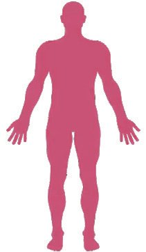
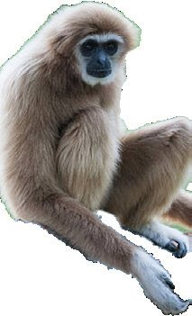

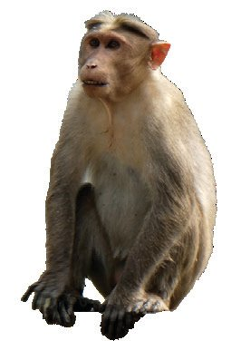


ജീവശാസ്ത്രം - X
സസ്തനിവിഭാഗത്തിലെ കുരങ്ങന്മാരുടെയും ആള്ക്കുരങ്ങുകളുടെ യും മനുഷ്യയരുടെയും പൊൊതുപൂർവികർ പ്രൈമേറ്റുകള് എന്ന വി ഭാഗത്തിൽപ്പെട്ടവരായിരുന്നു. ഇവയുടെ പൊൊതുസവിശേഷതകള് എന്തൊൊക്കെയാണ്? y y y
മറ്റ് വിരലുകളോോട് സമ്മുഖമാക്കാവുന്ന തള്ളവിരല് ദ്വിനേത്ര ദർശനം
y മനുഷ്യയ പരിണാമവൃക്ഷത്തിലുൾപ്പെടുന്ന ജീവികളേതെല്ലാമാണ്? ചിത്രീകരണം 2.8 നിരീക്ഷിച്ച് സൂചകങ്ങളെ ആസ്പദമാക്കി ചർച്ച ചെയ്ത് നിഗമനങ്ങൾ രൂപീകരിക്കൂ.
കുരങ്ങ്
ഗിബ്ബൺ
ഒറാങ്ങുട്ടാൻ
ചിമ്പാൻസി
മനുഷ്യയൻ
ഹൊൊമിനോോയിഡിയ
സെർക്കോോപിത്തിക്കോോയിഡിയ ചെറിയ മസ്തിഷ്കം വാൽ ഉള്ളവർ
ഗോോറില്ല
ആന്ത്രോോപോോയിഡിയ
വലിയ മസ്തിഷ്കം വാൽ ഇല്ലാത്തവർ
പ്രൈമേറ്റുകൾ ചിത്രീകരണം
2.8
മനുഷ്യയപരിണാമ വൃക്ഷം
സൂചകങ്ങൾ y ആന്ത്രോോപോോയിഡിയയിലെ രണ്ടുവിഭാഗങ്ങളുംം അവയുടെ പ്രത്യേേകതകളുംം y ആൾക്കുരങ്ങുകളുംം മനുഷ്യയരുംം ഉൾപ്പെടുന്ന പൊൊതുവിഭാഗം. 51
ൾക്ക് കുരങ്ങുക മം പരിണാ ാണോോ സംഭവിച്ചാ ർ മനുഷ്യയ ്? ഉണ്ടായത് . ൂ കണ്ടെത്തൂ
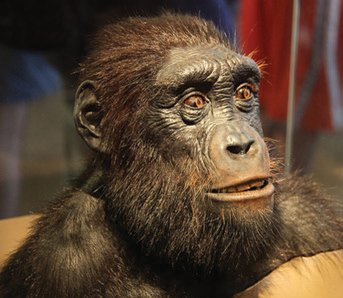
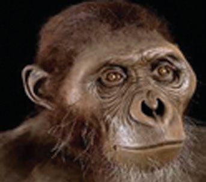


ജീവശാസ്ത്രം - X
മനുഷ്യയനോോട് പരിണാമപരമായി ഏറ്റവും അടുത്തുനിൽക്കുന്ന ജീവി യേതെന്ന് കണ്ടെത്തൂ. ഇതിന് കാരണമെന്തെന്ന് തിരിച്ചറിഞ്ഞെഴുതൂ. പട്ടിക 2.1 ല് നല്കിയിട്ടുള്ള ജീവികളുടെ തന്മാത്രാതാരതമ്യയപഠ നം നല്കുന്ന തെളിവുകളുടെ കൂടി അടിസ്ഥാനത്തില് നിങ്ങളുടെ കണ്ടെത്തലിന്റെ സാധുത സ്വവയം വിലയിരുത്തൂ. പരിണാമചരിത്രം അനാവരണം ചെയ്യുന്നതിൽ ഫോോസിലുകൾ നിർ ണ്ണായകമായ പങ്ക് വഹിക്കുന്നുണ്ടെന്ന് നിങ്ങള് മനസ്സിലാക്കിയല്ലോോ? മനുഷ്യയപരിണാമചരിത്രവും ലഭ്യയമായ ഫോോസിലുകളുടെ അടിസ്ഥാ നത്തില് വിശദീകരിക്കുവാൻ ശാസ്ത്രലോോകത്തിന് സാധിച്ചിട്ടുണ്ട്. ചിമ്പാൻസിയെയും മനുഷ്യയനെയും പരസ്പരം ബന്ധിപ്പിക്കുന്ന MRCA യിൽ നിന്നും മനുഷ്യയനിലേക്കുള്ള പരിണാമപാതയിൽ മറ്റു ചില ജീവികളുംം ഉണ്ടാകാമല്ലോോ. അവയെക്കുറിച്ചുള്ള വിവരണം വി ശകലനം ചെയ്ത് ചുവടെ നൽകിയ പട്ടിക 2.2 പൂർത്തിയാക്കൂ. മസ്തിഷ്കവലുപ്പം
സഹെലാന്ത്രോോപസ് ചാഡന്സിസ്
350 cm3
മനുഷ്യയപരിണാമ പരമ്പരയിലെ ആദ്യയകണ്ണി. ആഫ്രിക്കയിലെ ചാഡില് നിന്നും ഫോോസിലുകള് കണ്ടെടുത്തു.
അസ്ട്രാലോോപിത്തിക്കസ്
450 cm3
ഈ വിഭാഗത്തില്പ്പെട്ട ജീവികളുടെ ഏതാണ്ട് പൂര്ണ്ണമായ ഫോോസില് ആഫ്രിക്കയില് നിന്നും കണ്ടെത്തി. അസ്ഥികൂടത്തിന്റെ ഘടന ഇരുകാലു കളിലുള്ള നടത്തം സ്ഥിരീകരിക്കുന്നു.
ഹോോമോോ ഹബിലിസ്
600 cm3
ഫോോസിലുകള് ആഫ്രിക്കയില് നിന്നും ലഭിച്ചു. വലിയ തലയോോട്. കൈകള് ഉപയോോഗിച്ച് കല്ലു കള് കൊൊണ്ടുള്ള ഉപകരണങ്ങള് നിര്മ്മിച്ചു, ചെറിയ കൂട്ടമായി ജീവിച്ചു, വേട്ടയാടല് ആരംഭിച്ചു.
ഹോോമോോ ഇറക്ടസ്
900 cm3
ആഫ്രിക്കയില് നിന്നും ഏഷ്യയയില് നിന്നും യൂറോോ പ്പില് നിന്നും ഫോോസിലുകള് ലഭിച്ചു. ഇരുകാലു കളില് നിവര്ന്ന് നടക്കാന് കഴിവുള്ളവർ, വിശാല മായ നെറ്റിത്തടം, മിശ്രഭുക്കുകൾ, മികവു കൂടിയ കല്ലായുധങ്ങള് വേട്ടയാടുന്നതിനായി ഉപയോോഗിച്ചു. 52


ജീവശാസ്ത്രം - X
ഹോോമോോ നിയാണ്ടര്താലന്സിസ്
1450 cm3
ആധുനിക മനുഷ്യയന്റെ സമകാലികര്. ജര്മ്മനിയില് നിന്ന് ഫോോസിലുകള് ലഭിച്ചു. ചെറുതും ചരിഞ്ഞതു മായ നെറ്റിത്തടം, കട്ടികൂടിയ പുരികത്തടം എന്നി വയുള്ളവരായിരുന്നു. ഇവര് ശവശരീരങ്ങള് മറവു ചെയ്തിരുന്നു.
ഹോോമോോ സാപിയന്സ്
1350 cm3
ആധുനിക മനുഷ്യയന്. സാങ്കേതികവിദ്യയകളുംം കൃഷി രീതികളുംം സ്വായത്തമാക്കി. മൃഗങ്ങളെ ഇണക്കി വള ര്ത്തുകയും നഗരങ്ങള് സൃഷ്ടിക്കുകയും ചെയ്തു. സാംസ്കാരികമായി ഏറ്റവുമധികം പരിണാമം സംഭവി ച്ച വിഭാഗം. മനുഷ്യയർ
മസ്തിഷ്കവലുപ്പം
സവിശേഷതകൾ
സഹെലാന്ത്രോോപസ് ചാഡൻസിസ് അസ്ട്രാലോോപിത്തിക്കസ് ഹോോമോോ ഹബിലിസ് ഹോോമോോ ഇറക്ടസ് ഹോോമോോ നിയാണ്ടർതാലൻസിസ് ഹോോമോോ സാപിയൻസ് പട്ടിക
2.2
മനുഷ്യയന്റെ മസ്തിഷ്ക വലുപ്പത്തിലുണ്ടായ പരിണാമപരമായ പ്രവണതയെന്താണ്? .................................................. .................................................. മനുഷ്യയപരിണാമത്തില് മസ്തിഷ്കവികാസത്തിന് എന്തുസ്വാധീനമാണുള്ള ത്? ചുവടെ നൽകിയ വിവരണത്തെ ആസ്പദ മാക്കി ചർച്ചചെയ്ത് നിഗമനങ്ങൾ രേഖപ്പെടുത്തൂ.
മനുഷ്യയപരിണാമപാതയിലെ ജീവികൾ
നിയാണ്ടർതാലുകളുംം ആധുനിക മനുഷ്യയരുംം നിയാണ്ടർതാലുകൾക്കും ആധുനിക മനുഷ്യയർക്കും പൊൊതു പൂർ വികജീവിയുണ്ട്. ആയിരക്കണക്കിന് വർഷങ്ങളായി ഇവ രണ്ടും സഹവസിക്കുകയും പരസ്പരം ജീനുകൾ കൈമാറുകയും ചെയ്തു. ആഫ്രിക്കൻ ഇതര ആധുനിക മനുഷ്യയർക്ക് ഏകദേശം 1-2% നി യാണ്ടർതാൽ DNA ഉണ്ടെന്ന് ജനിതക തെളിവുകൾ കാണിക്കു ന്നു. നിയാണ്ടർതാലുകളുടെ മസ്തിഷ്കത്തിൻ്റെ വലുപ്പം ആധുനിക മനുഷ്യയരുടേതിനേക്കാൾ ശരാശരി അൽപം കൂടുതലായിരുന്നു. അവയുടെ മസ്തിഷ്കഘടന കാഴ്ചക്കും ശരീരനിയന്ത്രണത്തിനും കൂടുതൽ അനുയോോജ്യയമായിരുന്നു. എന്നാൽ ആധുനിക മനുഷ്യയ രുടെ മസ്തിഷ്കം സാമൂഹിക ഇടപെടലിനും സങ്കീർണ്ണമായ ചിന്ത ക്കും സഹായകമായി. നിയാണ്ടർതാലുകൾക്ക് 40,000 വർഷങ്ങൾ ക്ക് മുമ്പ് വംശനാശം സംഭവിച്ചു. 53

ജീവശാസ്ത്രം - X
കഴിഞ്ഞ 3 മുതൽ 4 ദശലക്ഷം വർഷങ്ങൾക്കുള്ളിലുണ്ടായ മസ്തിഷ്ക വലുപ്പവർധനവ് മനുഷ്യയപരിണാമത്തിലെ മുഖ്യയപ്രവണതയാണ്. 2 ദശലക്ഷം വർഷങ്ങൾ കൊൊണ്ട് മസ്തി ഷ്ക വലുപ്പം ഏകദേശം മൂന്നിരട്ടിയായി. ഇത് സങ്കീർണ്ണമായ സാമൂഹിക സ്വവഭാവങ്ങളുംം ഉപകരണങ്ങൾ നിർമ്മിക്കാനുള്ള കഴിവും ഭാഷ പ്രയോോഗിക്കാനുള്ള കഴിവും ഉയർന്ന വൈജ്ഞാനിക പ്രവർത്തനങ്ങളിൽ ഏർപ്പെടാനുള്ള കഴിവും മനുഷ്യയനു നൽകി. മാറി ക്കൊൊണ്ടിരിക്കുന്ന ചുറ്റുപാടുകളുമായി പൊൊരുത്തപ്പെടാനും സംസ്കാരം വികസിപ്പിക്കാ നും അത്യാധുനിക സാങ്കേതികവിദ്യയകൾ ഉപയോോഗിക്കാനും ഇത് മനുഷ്യയനെ സഹാ യിച്ചു. ചെറിയ തലച്ചോോറുള്ള പൂർവികരിൽ നിന്ന് ഹോോമോോ സാപിയൻസിലേക്കുള്ള മാറ്റത്തിന് അടിത്തറയിട്ടത് ഈ മസ്തിഷ്കവികാസമാണ്. മസ്തിഷ്കവും അനുബന്ധ ഭാഗങ്ങളുംം ഉൾപ്പെടുന്ന നാഡീവ്യയവസ്ഥ യെക്കുറിച്ച് മനസ്സിലാക്കുന്നത് കൂടുതൽ പരിണാമപരമായ ഉൾക്കാ ഴ്ച കൈവരിക്കുന്നതിന് സഹായകമാകും.
മനുഷ്യയരിലെ നാഡീവ്യയവസ്ഥ (Human Nervous System)
ജീവല് പ്രവര്ത്തനങ്ങളെ നിയന്ത്രിക്കുകയും ഏകോോപിപ്പിക്കുകയും ചെയ്യുന്നതില് മുഖ്യയ പങ്കുവഹിക്കുന്നത് നാഡീവ്യയവസ്ഥയാണെന്നറി യാമല്ലോോ. നാഡിവ്യയവസ്ഥയില് മസ്തിഷ്കം, സുഷുമ്ന, നാഡികള്, ഗ്രാഹികള് എന്നിവ ഉള്പ്പെടുന്നു.
ന്യൂറോോണുകൾ (Neurons) നാഡീവ്യയവസ്ഥയുടെ അടിസ്ഥാന നിർമ്മാണ ഘടകങ്ങളാണ് നാഡി കോോശങ്ങൾ അഥവാ ന്യൂറോോണുകൾ. ഇവ ഉദ്ദീപനങ്ങളെ സ്വീകരിച്ച് ഉചിതമായ സന്ദേശങ്ങൾ രൂപപ്പെടുത്താൻ കഴിവുള്ള സവിശേഷ കോോശങ്ങളാണ്. നൽകിയിട്ടുള്ള വിവരണത്തിന്റെ അടിസ്ഥാനത്തിൽ ചിത്രീകരണം 2.9 വിശകലനം ചെയ്ത് ന്യൂറോോണിന്റെ ഘടനയെപ്പറ്റി കുറിപ്പ് തയ്യാറാക്കി ന്യൂറോോണിലൂടെയുള്ള സന്ദേശങ്ങളുടെ സഞ്ചാര പാതയുടെ ഫ്ലോോചാർട്ട് ചിത്രീകരിക്കൂ. ആക്സോോൺ
കോോശശരീരം
ആക്സോോണൈറ്റ്
ഡെൻഡ്രോോൺ
ഡെൻഡ്രൈറ്റ്
സിനാപ്റ്റിക് നോോബ് ചിത്രീകരണം 2.9 ന്യൂറോോണിന്റെ ഘടന 54


ജീവശാസ്ത്രം - X
നാഡീകോോശത്തിന്റെ കേന്ദ്രമാണ് കോോശശരീരം. ഇവിടെ കോോശസ്ത രവും കോോശദ്രവ്യയവും ന്യൂക്ലിയസും കോോശാംഗങ്ങളുംം കാണപ്പെടു ന്നു. കോോശശരീരത്തിൽ നിന്ന് പുറപ്പെടുന്ന നേർത്ത തന്തുക്കളാണ് ഡെൻഡ്രോോണുകൾ. ഇവയുടെ ശാഖകളാണ് ഡെന്ഡ്രൈറ്റുകള്. തൊൊട്ടടുത്ത മറ്റ് നാഡീകോോശങ്ങളിൽ നിന്നും ഡെന്ഡ്രൈറ്റുകള് സ്വീകരിക്കുന്ന സന്ദേശങ്ങൾ കോോശശരീരത്തിലേക്ക് കൈമാറുന്നത് ഡെൻഡ്രോോണുകളിലൂടെയാണ്. കോോശശരീരത്തിൽ നിന്നുള്ള നീളം കൂടിയ തന്തുവാണ് ആക്സോോൺ. അതിന്റെ ശാഖകളാണ് ആക്സോോണൈറ്റുകള്. കോോശശരീരത്തില് നി ന്നുള്ള സന്ദേശങ്ങള് ആക്സോോണുകളിലൂടെ ആക്സോോണൈറ്റുകളി ലെത്തുന്നു. ആക്സോോണൈറ്റിന്റെ അഗ്രഭാഗത്തായി മുഴകള് പോോലെ കാണപ്പെടുന്ന ഭാഗമാണ് സിനാപ്റ്റിക് നോോബ്. ഇതില് തൊൊട്ടടുത്ത നാഡീകോോശത്തിലേക്ക് രാസസന്ദേശങ്ങള് കൈമാറുന്നതിനുള്ള ന്യൂറോോട്രാൻസ്മിറ്റർ (ഉദാ: അസറ്റൈൽകൊൊളീൻ) അടങ്ങിയിരിക്കുന്നു.
സ് ന്യൂറോോട്രോോൻ ് മിറ്ററുകൾക്ക് കൂടുതൽ ൾ ഉദാഹരണങ്ങ കണ്ടെത്തൂ.
നാഡിവ്യയവസ്ഥയിൽ നാഡീകോോശങ്ങൾ മാത്രമാണോോ ഉള്ളത്? ചുവടെ നൽകിയിട്ടുള്ള ചിത്രം 2.1, വിവരണം എന്നിവ നിരീക്ഷിച്ച് കുറിപ്പ് തയ്യാറാക്കൂ. എപൻഡൈമൽ കോോശം (Ependymal cell)
ഒളിഗോോഡെൻഡ്രോോസൈറ്റ് (Oligodendrocyte)
മൈക്രോോഗ്ലിയൽ കോോശം (Microglial Cell)
ഷ്വാൻ കോോശം (Schwann Cell)
ആസ്ട്രോോസൈറ്റ്
2.1 നാഡീവ്യയവസ്ഥയിലെ കോോശങ്ങൾ ന്യൂറോോഗ്ലിയല് കോോശങ്ങള് (Neuroglial Cells)
(Astrocyte)
ചിത്രം
മസ്തിഷ്കത്തിലും സുഷുമ്നയിലും പകുതിയിലധികവും ചിത്രം 2.1 ൽ കാണിച്ചിരിക്കുന്ന കോോ ശങ്ങളാണുള്ളത്. ഇവയാണ് ന്യൂറോോഗ്ലിയൽ കോോശങ്ങൾ. വിഭജനശേഷിയുള്ള ഈ കോോശ ങ്ങള്ക്ക് ഉദ്ദീപനങ്ങളെ സ്വീകരീക്കാനോോ സന്ദേശങ്ങളെ കടത്തിവിടാനോോ കഴിവില്ല. ന്യൂറോോഗ്ലി യൽ കോോശങ്ങളുടെ വിവിധ ധർമ്മങ്ങൾ ചുവടെ നൽകിയിരിക്കുന്നു. തുടർന്നുള്ള ഭാഗങ്ങൾ പഠിക്കുമ്പോോൾ ലഭ്യയമാകുന്ന വിവരങ്ങൾകൂടി ഉൾപ്പെടുത്തി ന്യൂറോോഗ്ലിയൽ കോോശങ്ങളുടെ കൂടുതൽ ധർമ്മങ്ങൾ കൂട്ടിച്ചേർക്കൂ. y നാഡികോോശങ്ങൾക്ക് ആവശ്യയമായ പോോഷണം എത്തിക്കുന്നു. y മാലിന്യയങ്ങൾ നീക്കം ചെയ്യുന്നു. y പ്രതിരോോധ കോോശങ്ങളായി പ്രവർത്തിക്കുന്നു. y y 55
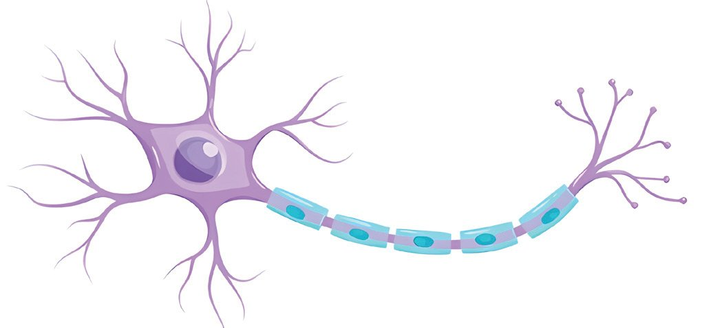

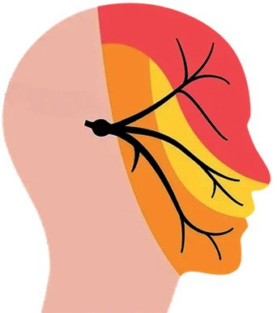
ജീവശാസ്ത്രം - X
ചിത്രീകരണം 2.9 ല് നല്കിയിട്ടുള്ള നാഡീകോോശവും ചുവടെ ചിത്രീ കരിച്ചിട്ടുള്ള നാഡീകോോശവും (ചിത്രം 2.2) തമ്മിലുള്ള വ്യയത്യാസം കണ്ടെത്തൂ. നൽകിയിട്ടുള്ള വിവരണം വിശകലനം ചെയ്ത് ഘടനാ പരമായ ഈ സവിശേഷത നാഡീകോോശങ്ങൾക്ക് പ്രയോോജനകരമാ കുന്നത് എങ്ങനെയെല്ലാം എന്ന ധാരണ കൈവരിക്കൂ.
മയലിന് ഷീത്ത് ചിത്രം
മയലിൻ ഷീത്ത്
ഒരു കൂട്ടം നാഡീകോോശങ്ങളുടെ കോോശശരീര ഭാഗങ്ങളെ ഒരാവരണം കൊൊണ്ട് പൊൊതിഞ്ഞിരിക്കുന്നു. ഗോോളാകൃതിയില് കാണപ്പെടുന്ന ഇത്തരം ഭാഗങ്ങളാണ് ഗാംഗ്ലിയോോണുകള്.
2.2
മയലിൻ ഷീത്ത് (Myelin Sheath)
ചില ന്യൂറോോണുകളില് ആക്സോോണിനെ പൊൊതിഞ്ഞ് മയലിന് ഷീത്ത് എന്ന ഒരാവരണം കാണപ്പെടുന്നുണ്ടെന്ന് മനസ്സിലാക്കിയല്ലോോ. ഇത് തിളക്കമുള്ള വെളുപ്പുനിറമുള്ള മയലിൻ എന്ന കൊൊഴുപ്പുകൊൊണ്ടാ ണ് നിർമ്മിച്ചിരിക്കുന്നത്. ഒരു ഇന്സുലേറ്ററായി പ്രവര്ത്തിച്ച് സന്ദേ ശങ്ങളുടെ പ്രസരണ വേഗത വർധിപ്പിക്കുക, നാഡീകോോശത്തിന് പോോഷണം ലഭ്യയമാക്കുക, ബാഹ്യയക്ഷതങ്ങളില് നിന്നും ആക്സോോണി നെ സംരക്ഷിക്കുക മുതലായവയാണ് മയലിന്ഷീത്തിന്റെ മുഖ്യയധർ മ്മങ്ങള്. മസ്തിഷ്കത്തിലും സുഷുമ്നയിലും മയലിൻ ഷീത്തിനെ നിർ മ്മിക്കുന്നത് ഒളിഗോോഡെൻഡ്രോോസൈറ്റുകളുംം നാഡികളിൽ മയലിൻ ഷീത്തിനെ നിർമ്മിക്കുന്നത് ഷ്വാൻ കോോശങ്ങളുമാണ്. മസ്തിഷ്കത്തിലും സുഷുമ്നയിലും മയലിന്ഷീത്തുള്ള നാ ഡീകോോശങ്ങള് കൂടുതലായി കാണപ്പെടുന്ന ഭാഗത്തെ വൈറ്റ് മാറ്റര് എന്നും കോോശശരീരവും മയലിന് ഷീത്ത് ഇല്ലാത്ത നാഡീ കോോശഭാഗങ്ങളുംം കാണപ്പെടുന്ന ഭാഗത്തെ ഗ്രേമാറ്റര് എന്നും പറയുന്നു. പരിണാമപരമായി ഉയർന്ന തലത്തില്പ്പെട്ട മനുഷ്യയരില് ബാഹ്യയവും ആന്തരികവുമായ മാറ്റങ്ങള്ക്കനുസരിച്ച് ശാരീരിക പ്രതികരണ ങ്ങളെ രൂപപ്പെടുത്തുകയും അവ ഏകോോപിപ്പിക്കുകയും ചെയ്യുന്ന തിന് അനുയോോജ്യയമായ ഒരു നാഡീവ്യയവസ്ഥാ സംവിധാനമാണ് പ്രവര്ത്തിക്കുന്നത്. ചുവടെ തന്നിട്ടുള്ള ചിത്രീകരണം 2.10 നിരീക്ഷിച്ച് മനുഷ്യയന്റെ നാഡീ വ്യയവസ്ഥയിലെ മുഖ്യയഭാഗങ്ങളെക്കുറിച്ച് ധാരണ കൈവരിക്കൂ. 56
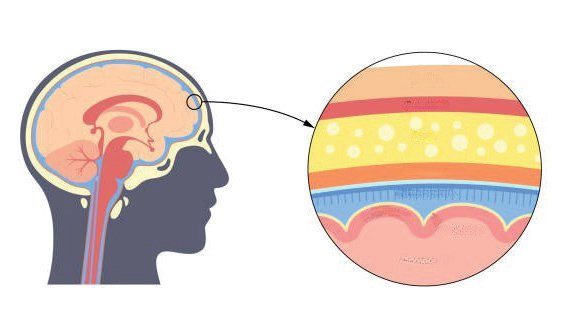

ജീവശാസ്ത്രം - X
നാഡീവ്യയവസ്ഥ കേന്ദ്രനാഡീവ്യയവസ്ഥ
പെരിഫെറൽ നാഡീവ്യയവസ്ഥ
മസ്തിഷ്കം, സുഷുമ്ന എന്നിവ ഉള്പ്പെടുന്നു
കേന്ദ്രനാഡീവ്യയവസ്ഥയെ അവയവങ്ങ ളുമായി ബന്ധിപ്പിക്കുന്ന 12 ജോോഡി ശിരോോനാഡികളുംം 31 ജോോഡി സുഷു മ്നാനാഡികളുംം ഗ്രാഹികളുംം നാഡീ ഗാംഗ്ലിയോോണുകളുംം ഉള്പ്പെടുന്നു.
ചിത്രീകരണം
2.10 നാഡീവ്യയവസ്ഥയുടെ ഭാഗങ്ങൾ
മസ്തിഷ്കവും സുഷുമ്നയും (Brain and Spinal cord) കേന്ദ്രനാഡീവ്യയവസ്ഥയുടെ ഭാഗങ്ങളായ മസ്തിഷ്കം, സുഷുമ്ന എന്നിവയുടെ സംരക്ഷണം എപ്രകാരമാണെന്ന് ചിത്രീകരണം 2.11, വിവരണം എന്നിവ സൂചകങ്ങൾക്കനുസരിച്ച് വിശകലനം ചെയ്ത് കുറിപ്പ് തയ്യാറാക്കൂ. മെനിഞ്ജസ് സെറിബ്രോോ സ്പൈനൽ ദ്രവം
ചിത്രീകരണം
2.11 നാഡീവ്യയവസ്ഥയുടെ സംരക്ഷണം
മസ്തിഷ്കം, സുഷുമ്ന എന്നിവയെ പൊൊതിഞ്ഞ് മൂന്ന് പാളികളോോട് കൂടിയ മെനിഞ്ജസ് കാണപ്പെടുന്നു. മെനിഞ്ജസിന്റെ ആന്തരപാളി കള്ക്കിടയിലും മസ്തിഷ്കത്തിന്റെ അറകളിലും സുഷുമ്നയുടെ സെന്ട്രല് കനാലിലും നിറഞ്ഞിരിക്കുന്ന ദ്രാവകമണ് സെറിബ്രോോ സ്പൈനല് ദ്രവം. ഈ ദ്രവത്തിന്റെ രൂപീകരണത്തിൽ എപൻഡൈമൽ കോോശങ്ങൾക്ക് പങ്കുണ്ട്. കേന്ദ്രനാഡീവ്യയവസ്ഥയില് സെറിബ്രോോസ്പൈ നല് ദ്രവം താഴെപറയുന്ന ധര്മ്മങ്ങള് നിർവഹിക്കുന്നു. y
കലകള്ക്ക് ഓക്സിജനും പോോഷണവും നല്കുന്നു.
y
മാലിന്യയങ്ങളെ നീക്കം ചെയ്യുന്നു.
y
മര്ദം ക്രമീകരിക്കുന്നു.
y
ബാഹ്യയക്ഷതങ്ങളില് നിന്നും സംരക്ഷിക്കുന്നു. 57

ജീവശാസ്ത്രം - X
ചിത്രീകരണം 2.12 വിശകലനം ചെയ്ത് മസ്തിഷ്കഭാഗങ്ങളുടെ സവിശേഷതകളുംം ധർമ്മങ്ങളുംം എന്നതിനെപ്പറ്റി ധാരണ കൈവരിച്ച് പട്ടിക 2.3 പൂർത്തിയാക്കൂ. സെറിബ്രം
സെറിബെല്ലം
മസ്തിഷ്കത്തിലെ ഏറ്റവും വലിയഭാഗം. ഗ്രേമാറ്റർ കാണപ്പെടുന്ന ബാഹ്യയഭാഗത്തെ കോോർട്ടക്സ് എന്നും വൈറ്റ് മാറ്റർ കാണ പ്പെടുന്ന ആന്തരഭാഗത്തെ മെഡുല്ല എന്നും അറിയപ്പെടുന്നു. പ്രശ്നപരിഹാരം, ആസൂത്ര ണം, ഐച്ഛിക ചലനങ്ങൾ എന്നിവയില് മുഖ്യയപങ്ക് വഹിക്കുന്നു. ഓർമ്മ, ബുദ്ധി, ചിന്ത, ഭാവന എന്നിയുടെ കേന്ദ്രം. വിവിധ ഇന്ദ്രിയാനുഭവങ്ങള് ലഭ്യയമാക്കുന്നു.
മസ്തിഷ്കത്തിലെ രണ്ടാമത്തെ വലിയഭാഗം. സെറിബ്രത്തിന് പിന്നില് താഴെയായി കാണപ്പെടുന്നു. പേശീപ്രവര്ത്തനങ്ങളെ ഏകോോപിപ്പിച്ച് ശരീരതുലന നില കൈവരിക്കാന് സഹായിക്കുന്നു.
തലാമസ് മസ്തിഷ്കത്തിന്റെ ആന്തരഭാഗത്ത് കാണ പ്പെടുന്നു. സെറിബ്രത്തിലേക്കും സെറിബ്ര ത്തില് നിന്നുമുള്ള സന്ദേശങ്ങളുടെ പുനഃഃ പ്രസരണകേന്ദ്രം. വേദനാസംഹാരികള് പ്രവര്ത്തിക്കുന്നത് ഈ ഭാഗത്താണ്.
ഹൈപ്പോോതലാമസ് ശരീരോോഷ്മാവ്, വിശപ്പ്, ദാഹം, വികാരങ്ങൾ തുടങ്ങിയ വിവിധ ശാരീരിക പ്രവർത്തനങ്ങൾ നിയന്ത്രിച്ച് ആന്തരസമസ്ഥിതി പാലത്തിന് സഹായിക്കുന്നു.
മിഡ് ബ്രെയിൻ
പോോൺസ്
മെഡുല്ല ഒബ്ലോംംഗേറ്റ
കാഴ്ച, കേള്വി എന്നിവ യുമായി ബന്ധപ്പെട്ട സന്ദേ ശങ്ങള് പ്രാഥമികമായി വിലയിരുത്തുന്നു. കണ്ണുകള്, പുരികങ്ങള് എന്നിവയുടെ ചലനത്തിൽ ഈ ഭാഗത്തിന് പങ്കുണ്ട്.
കണ്ണിലും മുഖത്തു മുള്ളപേശികളുടെ പ്രവര്ത്തനങ്ങളെ ഏകോോപിപ്പിക്കുന്നു. ശ്വാസോോച്ഛ്വാസ നിരക്കിനെ നിയന്ത്രിക്കുന്നു.
ഹൃദയസ്പന്ദനം, ശ്വാസോോച്ഛ്വാസം, ഛർദി, ചുമ, തുമ്മല് തുടങ്ങിയ അനൈച്ഛിക പ്രവര്ത്തനങ്ങളെ നിയന്ത്രിക്കുന്നു.
ബ്രെയിൻ സ്റ്റെംം ചിത്രീകരണം 2.12 മസ്തിഷ്കത്തിലെ ഭാഗങ്ങളുംം ധർമ്മവും 58
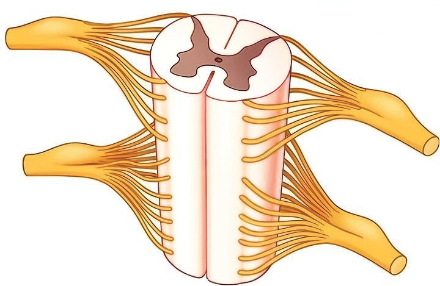

ജീവശാസ്ത്രം - X
ഭാഗം
ധർമ്മം
സെറിബ്രം ദ്യയപാനം, പുകവലി, മ ് എന്നി മയക്കുമരുന്ന് യോോഗം വയുടെ ഉപ ിന്റെ മസ്തിഷ്കത്തി ആരോോഗ്യയത്തെ എങ്ങനെയെല്ലാം ? ബാധിക്കുന്നു കണ്ടെത്തൂ
സെറിബെല്ലം തലാമസ് ഹൈപ്പോോതലാമസ് മിഡ് ബ്രെയിൻ പോോൺസ് മെഡുല്ല ഒബ്ലോംംഗേറ്റ പട്ടിക
2.3
മസ്തിഷ്കത്തിലെ ഭാഗങ്ങളുംം ധർമ്മവും
സുഷുമ്ന (Spinal Cord) മെഡുല്ല ഒബ്ലോംംഗേറ്റയുടെ തുടര്ച്ചയായി കാണപ്പെടുന്ന കേന്ദ്രനാ ഡീവ്യയവസ്ഥയുടെ ഭാഗമാണ് സുഷുമ്ന. ചിത്രീകരണം 2.13, വിവരണം എന്നിവ വിശകലനം ചെയ്ത് കുറിപ്പ് തയ്യാറാക്കൂ. ഗ്രേമാറ്റർ
സെൻട്രൽ കനാൽ സെറിബ്രോോസ്പൈനൽ ദ്രവം നിറഞ്ഞിരിക്കുന്ന ഭാഗം
വൈറ്റ്മാറ്റർ
ഡോോർസൽ റൂട്ട് ശരീരത്തിന്റെ വിവിധ ഭാഗങ്ങളിൽ നിന്നുള്ള സന്ദേശങ്ങളെ സുഷുമ്നയിലേക്ക് കടത്തിവിടുന്നു. വെൻട്രൽ റൂട്ട് സുഷുമ്നയിൽ നിന്നുള്ള നിർദേശങ്ങൾ ശരീരത്തിന്റെ വിവിധ ഭാഗങ്ങളിലേക്ക് കൈമാറുന്നു.
സുഷുമ്നാനാഡി ചിത്രീകരണം
2.13 സുഷുമ്ന - ഘടന
ശരീരത്തിന്റെ വിവിധ ഭാഗങ്ങളില് നിന്നുള്ള സന്ദേശങ്ങളെ മസ്തിഷ്ക ത്തിലെത്തിക്കുകയും മസ്തിഷ്കത്തിൽ നിന്നുള്ള നിർദേശങ്ങളെ ശരീരത്തിന്റെ വിവിധ ഭാഗങ്ങളിലേക്ക് കൈമാറുകയും ചെയ്യുന്നത് സുഷുമ്നയാണ്. 59
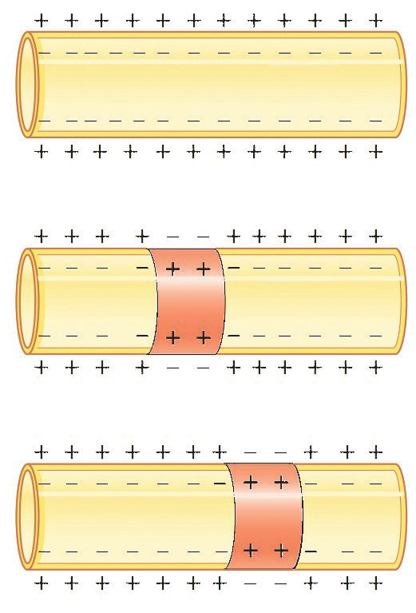
ജീവശാസ്ത്രം - X
നാഡീകോോശത്തിലൂടെ സന്ദേശ ങ്ങള് കൈമാറുന്നുണ്ടല്ലോേേ. ഇത് എങ്ങനെയായിരിക്കും സംഭവിക്കുന്നത്?
കുട്ടിയുടെ സംശയം ശ്രദ്ധിച്ചല്ലോോ. നാഡീകോോശത്തിലൂടെ കൈമാറ്റം ചെയ്യപ്പെടുന്ന സന്ദേശങ്ങളാണ് നാഡീയ ആവേഗങ്ങള്. ഇവ എപ്രകാരമാണ് പ്രേഷണം ചെയ്യപ്പെടുന്നത്? ചുവടെ നല്കിയിട്ടുള്ള ചിത്രീകരണം 2.14, വിശകലനം ചെയ്ത് തുടർ ന്നു നടക്കുന്ന പ്രക്രിയകൾ ചർച്ചചെയ്ത്, കണ്ടെത്തലുകൾ രേഖപ്പെടു ത്തി കുട്ടിയുടെ സംശയത്തിന് വിശദീകരണം നല്കൂ. നാഡീകോോശങ്ങൾ ഉൾപ്പെടെയുള്ള എല്ലാ കോോശങ്ങളുംം വൈദ്യുുത ചാർജുള്ളവയാണ്. അവയുടെ കോോശസ്തരത്തിൻ്റെ ഉൾഭാഗം പുറ ത്തേക്കാൾ നെഗറ്റീവ് ആയിരിക്കും. ഉദ്ദീപിപ്പിക്കപ്പെടുമ്പോോൾ കോോശ സ്തരത്തിന് പുറത്തുനിന്ന് പോോസിറ്റീവ് ചാർജുള്ള അയോോണുകൾ കോോശത്തിലേക്ക് പ്രവേശിക്കുന്നു. ഇത് താൽക്കാലികമായി ആ ഭാഗത്ത് ചാർജ് വ്യയതിയാനം ഉണ്ടാക്കുന്നു. a)
ഉദ്ദീപനം
ഉദ്ദീപിപ്പിക്കപ്പെടാത്ത അവസ്ഥയിൽ കോോശസ്തര ത്തിനു പുറത്ത് പോോസിറ്റീവ് ചാർജും ഉള്ളിൽ നെഗറ്റീവ് ചാർജും നിലനിൽക്കുന്നു.
b)
......................................................................................................... .........................................................................................................
c)
......................................................................................................... ......................................................................................................... ചിത്രീകരണം
2.14 ആവേഗങ്ങളുടെ പ്രേഷണം 60

ജീവശാസ്ത്രം - X
ഒരു ന്യൂറോോണിലൂടെ ആവേഗങ്ങള് ശരീരത്തിന്റെ വിവിധ ഭാഗങ്ങളി ലേക്ക് സഞ്ചരിക്കപ്പെടുമോോ? ഒരു നാഡീയ ആവേഗം ശരീരത്തിന്റെ ഒരു ഭാഗത്തുനിന്ന് മറ്റൊൊരു ഭാഗത്തേക്ക് എത്തണമെങ്കിൽ പല ന്യൂറോോണുകളിലൂടെ സഞ്ചരിക്കേ ണ്ടി വരുംം. ഒരു ന്യൂറോോണിൽ നിന്ന് മറ്റൊൊന്നിലേക്ക് ആവേഗം കൈമാ റുന്ന ഭാഗമാണ് സിനാപ്സ്. ചുവടെ നല്കിയിട്ടുള്ള ചിത്രീകരണം 2.15, വിവരണം എന്നിവ സൂചകങ്ങളുടെ അടിസ്ഥാനത്തില് ചര്ച്ചചെയ്ത് ന്യൂറോോണുകൾ ചേരുന്നുണ്ടാകുന്ന സിനാപ്സിനെപ്പറ്റി കുറിപ്പ് തയ്യാറാക്കൂ.
സിനാപ്റ്റിക് നോോബ്
പ്രീസിനാപ്റ്റിക് സ്തരം
ന്യൂറോോട്രാൻസ്മിറ്റർ
(Synaptic knob)
പോോസ്റ്റ് സിനാപ്റ്റിക് സ്തരം
(Postsynaptic membrane)
ന്യൂറോോട്രാൻസ്മിറ്ററുകൾ നിറഞ്ഞ വെസിക്കിളു കൾ ഉള്ള ആക്സോോ ണൈറ്റിൻ്റെ അഗ്രഭാഗം. സിനാപ്റ്റിക് വെസിക്കിൾ
സിനാപ്റ്റിക് വിടവ് (Synaptic cleft)
ന്യൂറോോട്രാൻസ്മിറ്ററുകളെ സ്വീകരിക്കുന്ന റിസപ്റ്ററു കൾ ഉള്ള ഡെൻഡ്രൈറ്റി ന്റെ അഗ്രഭാഗം. റിസപ്റ്റർ
ന്യൂറോോണുകൾക്കിടയി ലുള്ള ചെറിയ വിടവ്.
ചിത്രീകരണം
2.15 സിനാപ്സിന്റെ ഘടന
ആവേഗങ്ങൾ സിനാപ്റ്റിക് നോോബിൽ എത്തുമ്പോോൾ, അത് ന്യൂറോോട്രാൻസ്മിറ്ററുകളെ സിനാപ്റ്റിക് വിടവിലേക്ക് സ്രവിക്കുന്നു. ഈ ന്യൂറോോട്രാൻസ്മിറ്ററുകൾ പോോസ്റ്റ്സിനാപ്റ്റിക് സ്തരത്തിലെ റിസ പ്റ്ററുകളുമായി ചേർന്ന് ആ ന്യൂറോോണിനെ ഉദ്ദീപിപ്പിക്കുന്നു. സിനാ പ്സുകൾ ആവേഗങ്ങളെ ഒരു ദിശയിൽമാത്രം കടത്തിവിടുകയും ആവേ ഗങ്ങളുടെ സഞ്ചാരവേഗത വർധിപ്പിക്കുകയും ചെയ്യുന്നു.
സൂചകങ്ങള് y സിനാപ്സിന്റെ ഭാഗങ്ങള് y സിനാപ്സിലൂടെയുള്ള ആവേഗങ്ങളുടെ പ്രേഷണം y ആവേഗങ്ങളുടെ ദിശ, വേഗത എന്നിവ നിയന്ത്രിക്കുന്നതില് സിനാപ്സിന്റെ പങ്ക് 61
ങ്ങള് നാഡീകോോശ ഗത്ത ചേരുന്ന ഭാ ിടെ ല്ലാതെ മറ്റെവി യെങ്കിലും ാണപ്പെ സിനാപ്സ് കാ ? ടുന്നുണ്ടോോ കണ്ടെത്തൂ.


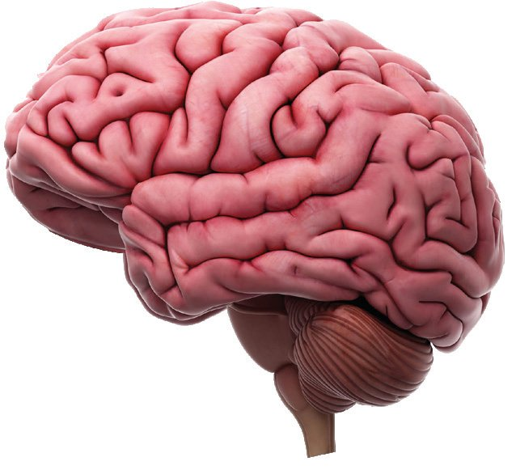

ജീവശാസ്ത്രം - X
ി മനുഷ്യയരുടേതി ി മസ്തി നേക്കാള് ള്ള ഷ്കവലുപ്പമു ? ഉണ്ടോോ ജീവികള് . കണ്ടെത്തൂ
സിനാപ്സിന്റെ മാതൃക ലഭ്യയമായ വസ്തുക്കൾ ഉപയോോഗിച്ച് തയ്യാറാക്കി ക്ലാസിൽ പ്രദർശിപ്പിക്കൂ. മസ്തിഷ്കത്തിലെ സിനാപ്സുമായി ബന്ധപ്പെട്ട് ശാസ്ത്രമാസി കയില് പ്രസിദ്ധീകരിച്ച ഒരു ലേഖനത്തിന്റെ കുറച്ചുഭാഗം ചുവടെ നല്കിയിരിക്കുന്നു. അത് വിശകലനം ചെയ്ത് മനുഷ്യയമസ്തിഷ്കത്തെ ഇതര സസ്തനികളുടേതില് നിന്നും വേറിട്ട് നിര്ത്തുന്ന പ്രത്യേേകതക ളെപ്പറ്റി ചര്ച്ചചെയ്ത് ധാരണ കൈവരിക്കൂ.
നവീനമസ്തിഷ്കം (നിയോോ കോോർട്ടക്സ്) സസ്തനികളിലെ മസ്തിഷ്കത്തിലെ സെറിബ്രല് കോോര്ട്ടക്സ് ആറ് അടു ക്കുകളുള്ള നവീനമസ്തിഷ്കം എന്ന സങ്കീർണ്ണഘടനയായി രൂപാന്ത രം പ്രാപിച്ചിരിക്കുന്നു. മനുഷ്യയരിലാണ് മറ്റ് സസ്തനികളെ അപേ ക്ഷിച്ച് ഇത് ഏറ്റവും കൂടുതല് വികാസം പ്രാപിച്ചിരിക്കുന്നത്. മനുഷ്യയന്റെ നവീനമസ്തിഷ്കത്തില് ഏകദേശം 16 ബില്യയണ് നാഡീകോോശങ്ങള് ഉണ്ടെന്നാണ് കണക്കാക്കപ്പെട്ടിരിക്കുന്നത്. അവയിലോോരോോന്നും മറ്റുള്ളവയുമായി ശരാശരി ഏഴായിരത്തോോ ളം സിനാപ്സുകള് സൃഷ്ടിക്കപ്പെടുന്നുണ്ട്. ചിന്തിക്കുക, തീരുമാന ങ്ങൾ എടുക്കുക, പഠിക്കുക, ഓർമ്മിക്കുക തുടങ്ങിയ ഉന്നതമായ മാനസിക പ്രവർത്തനങ്ങളെല്ലാം നവീന മസ്തിഷ്കത്തിലെ സിനാപ്സുക ളുടെ സഹായത്തോോടെയാണ് സാധ്യയമാകുന്നത്. നമ്മൾ പുതിയ കാര്യയങ്ങൾ പഠിക്കുകയോോ പുതിയ അനുഭവങ്ങൾ നേടുകയോോ ചെയ്യുമ്പോോൾ ഈ സിനാപ്സുകളുടെ എണ്ണം വർധിക്കുക യും നമ്മുടെ മസ്തിഷ്കം കൂടുതൽ കാര്യയക്ഷമമാവുകയും ചെയ്യുന്നു.
വിവിധതരം ന്യൂറോോണുകൾ വിവിധതരം നാഡീകോോശങ്ങളെക്കുറിച്ചുള്ള ചിത്രീകരണം 2.16 നിരീ ക്ഷിച്ച് ചുവടെ തന്നിട്ടുള്ള പട്ടിക 2.4 പൂര്ത്തിയാക്കുക. കേന്ദ്ര നാഡീവ്യയവസ്ഥ
പെരിഫെറൽ നാഡീവ്യയവസ്ഥ ഗ്രാഹി സംവേദന്യൂറോോണ് ഇന്റർന്യൂറോോണ്
പ്രേരകന്യൂറോോണ്
ചിത്രീകരണം
2.16 വിവിധതരം ന്യൂറോോണുകൾ 62
അവയവം (പേശി/ ഗ്രന്ഥി)
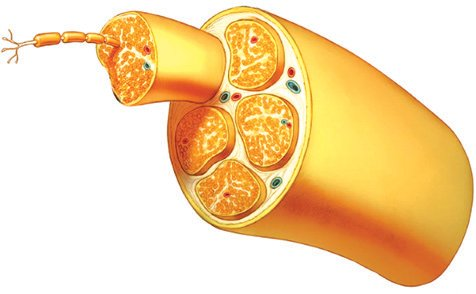
ജീവശാസ്ത്രം - X
ന്യൂറോോണുകൾ
ധര്മ്മം
സംവേദന്യൂറോോണ് പ്രേരകന്യൂറോോണ് ഇന്റര്ന്യൂറോോണ് പട്ടിക
2.4
വിവിധതരം നാഡീകോോശങ്ങളുംം ധർമ്മവും
നാഡികൾ (Nerves) ഒരു കൂട്ടം നാഡീകോോശങ്ങളുടെ ആക്സോോണുകള് കൊൊഴുപ്പിന്റെയും യോോജകകലയുടെയും പാളിയാല് പൊൊതിഞ്ഞ് നിർമ്മിക്കപ്പെട്ടിട്ടുള്ള താണ് നാഡികള്. നിർമ്മാണഘടകങ്ങളുടെ പ്രത്യേേകതയുടെ അടി സ്ഥാനത്തില് വിവിധതരം നാഡികളെ പട്ടികപ്പെടുത്തിയിരിക്കുന്നു. പട്ടിക 2.5 ഉചിതമായി പൂര്ത്തിയാക്കൂ. നാഡി
നിർമ്മാണഘടകം
സംവേദനാഡി
സംവേദന്യൂറോോൺ
ധർമ്മം കേന്ദ്രനാഡീവ്യയവസ്ഥയിൽ നിന്നുള്ള നിർദേശ ങ്ങൾ അവയവങ്ങളിലെത്തിക്കുന്നു.
പ്രേരകനാഡി സമ്മിശ്രനാഡി പട്ടിക
നാഡി
സംവേദന്യൂറോോണും പ്രേരകന്യൂറോോണും
2.5
വിവിധതരം നാഡികളുംം ധർമ്മവും
നമ്മുടെ ശരീരത്തിൽ ഹൃദയമിടിപ്പ്, ശ്വവസനം തുടങ്ങിയ നിരവധി പ്രവർത്തനങ്ങൾ ബോോധപൂർവമായ നിയന്ത്രണം ഇല്ലാതെ തന്നെ നടക്കുന്നുണ്ടല്ലോോ. ഇത്തരം പ്രവർത്തനങ്ങളെ നിയന്ത്രിക്കുന്നതില് കേന്ദ്രനാഡീവ്യയവസ്ഥയുടെ പ്രാധാന്യയത്തെപ്പറ്റി നിങ്ങള് മനസ്സിലാ ക്കിയിട്ടില്ലേ. ചില സാഹചര്യയങ്ങളില് കേന്ദ്രനാഡീവ്യയവസ്ഥയുടെ പ്രവര്ത്തനം കൊൊണ്ട് മാത്രം ഇവയുടെ നിയന്ത്രണം സാധ്യയമാകുമോോ? ചുവടെ നല്കിയിട്ടുള്ള വിവരണം വിശകലനം ചെയ്ത് നിഗമനങ്ങള് രൂപീകരിക്കുന്നതോോടൊൊപ്പം അനുബന്ധമായി നല്കിയിട്ടുള്ള ചിത്രീക രണം 2.17 നിരീക്ഷിച്ച് പട്ടിക 2.6 ഉചിതമായി പൂര്ത്തിയാക്കൂ.
സ്വവതന്ത്രനാഡീവ്യയവസ്ഥ (Autonomous Nervous System) പെരിഫെറൽ നാഡീവ്യയവസ്ഥയുടെ ഭാഗമായ സ്വവതന്ത്രനാഡീവ്യയവസ്ഥ ശാരീരികപ്രവർത്തനങ്ങളെ സ്വവയം നിയന്ത്രിക്കുന്നു. ഇതിൽ സിംപ തറ്റിക് നാഡീവ്യയവസ്ഥയും പാരാസിംപതറ്റിക് നാഡീവ്യയവസ്ഥയും ഉള്പ്പെടുന്നു. സിംപതറ്റിക് വ്യയവസ്ഥ അടിയന്തിര സാഹചര്യയങ്ങളിൽ ശരീരത്തെ പ്രതികരിക്കാൻ സജ്ജമാക്കുന്നു. പാരാസിംപതറ്റിക് വ്യയവ സ്ഥ വിശ്രമിക്കാനും ദഹനം പോോലുള്ള ദൈനംദിന പ്രവർത്തനങ്ങൾ ക്കും ശരീരത്തെ സജ്ജമാക്കുന്നു. 63
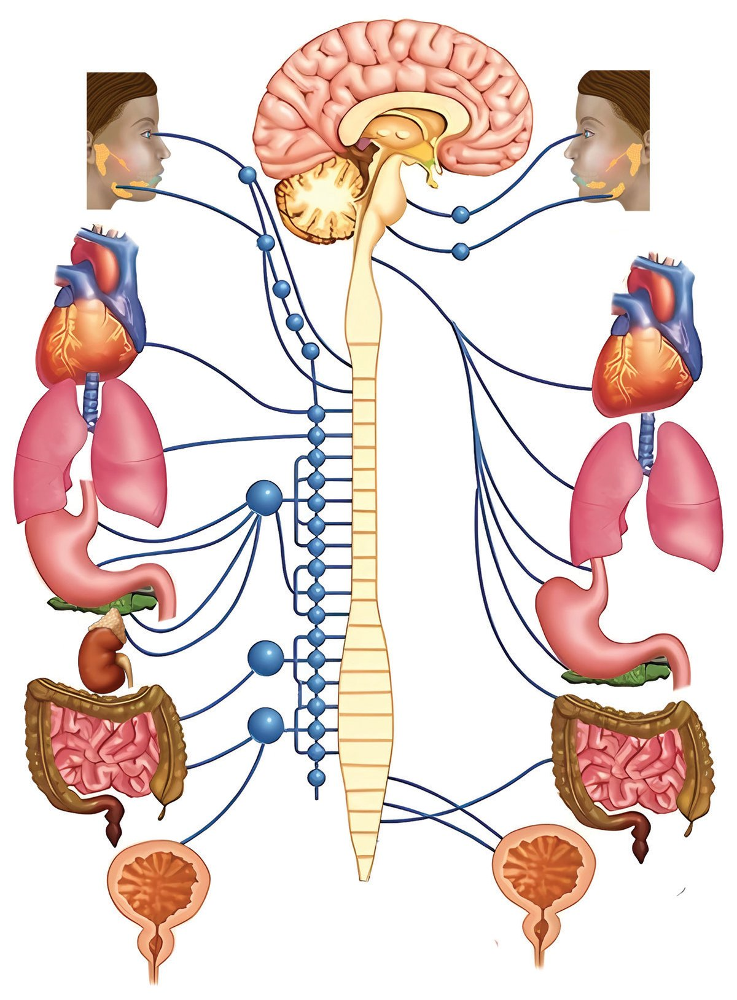
ജീവശാസ്ത്രം - X
സിംപതറ്റിക് വ്യയവസ്ഥ
പാരാസിംപതറ്റിക് വ്യയവസ്ഥ
വികസിക്കുന്നു
ചുരുങ്ങുന്നു
ഉമിനീർ ഉൽപാദനം കുറയുന്നു
ഉമിനീർ ഉൽപാദനം കൂടുന്നു
ഹൃദയമിടിപ്പ് കൂടുന്നു
ഹൃദയമിടിപ്പ് കുറയുന്നു
വികസിക്കുന്നു
ചുരുങ്ങുന്നു
ദഹനപ്രക്രിയ മന്ദീഭവിക്കപ്പെടുന്നു ഹോോർമോോൺ ഉൽപാദനം കൂടുന്നു
ദഹനപ്രക്രിയ ഉദ്ദീപിപ്പിക്കപ്പെടുന്നു
പെരിസ്റ്റാൾസിസ് കുറയുന്നു
പെരിസ്റ്റാൾസിസ് കൂടുന്നു
മൂത്രം നിലനിർത്തുന്നു
ശൂന്യയമാക്കപ്പെടുന്നു
ചിത്രീകരണം അവയവം/ഭാഗം
2.17
സ്വവതന്ത്രനാഡീവ്യയവസ്ഥ
സിംപതറ്റിക് വ്യയവസ്ഥ
പാരാസിംപതറ്റിക് വ്യയവസ്ഥ
കണ്ണിലെ പ്യൂപ്പിൾ ഉമിനീർ ഗ്രന്ഥി ശ്വവസനിക ഹൃദയം അഡ്രിനൽ ഗ്രന്ഥി ആമാശയം
നേരിട്ട് സ്വാധീനിക്കുന്നില്ല
ചെറുകുടൽ മൂത്രാശയം പട്ടിക
2.6
സിംപതറ്റിക്, പാരാസിംപതറ്റിക് വ്യയവസ്ഥ - താരതമ്യംം 64

ജീവശാസ്ത്രം - X
നമ്മുടെ ബോോധതലത്തിന് പുറത്ത് നടക്കുന്ന വിവിധ ശാരീരിക പ്രവര്ത്തനങ്ങളെ നിയന്ത്രിക്കുന്നതില് പെരിഫെറല് നാഡീവ്യയവസ്ഥ യുടെ ഭാഗമായ സ്വവതന്ത്രനാഡീവ്യയവസ്ഥയുടെ പങ്ക് ബോോധ്യയപ്പെട്ടില്ലേ? ഉദ്ദീപനങ്ങള്ക്കനുസരിച്ച് ആകസ്മിക പ്രതികരണങ്ങള് ഉണ്ടാക്കുന്ന തില് കേന്ദ്രനാഡീവ്യയവസ്ഥയും പ്രധാന പങ്ക് വഹിക്കുന്നുണ്ട്. ചൂടുള്ള വസ്തുവില് നാം അറിയാതെ സ്പര്ശിക്കുമ്പോോള് കൈ പിൻ വലിക്കാറില്ലേ? സമാനമായ കൂടുതല് സാഹചര്യയങ്ങള് ലിസ്റ്റ് ചെയ്യൂ. y കണ്ണിലേക്ക് പ്രകാശം പതിക്കുമ്പോോള് കണ്ണ് ചിമ്മുന്നത്. y ഇത്തരം സാഹചര്യയങ്ങളില് നാം ബോോധപൂർവമാണോോ പ്രതികരിക്കു ന്നത്?
ആകസ്മിക പ്രതികരണങ്ങൾ ഉദ്ദീപനത്തിനനുസരിച്ച് ആകസ്മികമായും അനൈച്ഛികമായും നട ക്കുന്ന പ്രതികരണങ്ങളാണ് റിഫ്ലക്സ് പ്രവർത്തനങ്ങൾ (Reflex action). സുഷുമ്നയിൽ നിന്നും മസ്തിഷ്കത്തിൽനിന്നും റിഫ്ലക്സ് പ്രവർത്തനങ്ങളുണ്ടാകാറുണ്ട്. റിഫ്ലക്സ് പ്രവർത്തനത്തിൽ ആവേഗ ങ്ങളുടെ സഞ്ചാരപാതയാണ് റിഫ്ലക്സ് ആർക്ക് (Reflex arc). ചുവടെ കൊൊടുത്തിരിക്കുന്ന ചിത്രീകരണം 2.18 സൂചകങ്ങൾ ഉപയോോഗിച്ച് വിശകലനം ചെയ്ത് കുറിപ്പ് തയ്യാറാക്കൂ.
4 പ്രേരകന്യൂറോോൺ 3
ഇന്റർന്യൂറോോൺ
5 പേശി 2
സംവേദന്യൂറോോൺ
1
ഗ്രാഹി
ചിത്രീകരണം
2.18 റിഫ്ലക്സ് പ്രവർത്തനം 65
ജീവശാസ്ത്രം - X
സൂചകങ്ങൾ y റിഫ്ലക്സ് ആർക്കിൽ ഉൾപ്പെട്ടിരിക്കുന്ന ഭാഗങ്ങൾ. y ഓരോോ ഭാഗവും നിർവഹിക്കുന്ന ധർമം. y റിഫ്ലക്സ് പ്രവർത്തനത്തിന്റെ പ്രാധാന്യം. നേരത്തെ ലിസ്റ്റ് ചെയ്ത സാഹചര്യയങ്ങളെ സുഷുമ്നയുടെ നിയന്ത്രണ ത്തില് നടക്കുന്നവ മസ്തിഷ്കത്തിന്റെ നിയന്ത്രണത്തില് നടക്കുന്നവ എന്നിങ്ങനെ പട്ടികപ്പെടുത്തൂ. ശാരീരിക പ്രവർത്തനങ്ങളുടെ നിയന്ത്രണവും ഏകോോപനവും സാ ധ്യയമാക്കുന്നതിൽ പ്രധാന പങ്ക് വഹിക്കുന്ന നാഡീവ്യയവസ്ഥയുടെ ആരോോഗ്യംം സംരക്ഷിക്കപ്പെടേണ്ടതല്ലേ? നാഡിവ്യയവസ്ഥയുടെ ആരോോ ഗ്യയസംരക്ഷണവുമായി ബന്ധപ്പെട്ട് ആരോോഗ്യയവകുപ്പ് പുറത്തിറക്കിയ ഒരു നോോട്ടീസിലെ പ്രധാന ആശയങ്ങളാണ് ചുവടെ നൽകിയിട്ടുള്ള ത്. അത് വിശകലനം ചെയ്തും അധികവിവരം ശേഖരിച്ചും നാഡീവ്യയ വസ്ഥയുടെ സംരക്ഷണത്തിന് അനുവർത്തിക്കേണ്ട മുൻകരുതലുക ളെപ്പറ്റിയും ശീലങ്ങളെപ്പറ്റിയും കുറിപ്പ് തയ്യാറാക്കൂ. y വാഹനം ഓടിക്കുമ്പോോൾ ഹെല്മെറ്റ്, സീറ്റ് ബെൽറ്റ് തുടങ്ങി യവ ഉപയോോഗിക്കുക. y കളികളില് ഏര്പ്പെടുമ്പോോള് ആവശ്യയമായ മുന്കരുതലുകള് സ്വീകരിക്കുക. y കെട്ടിക്കിടക്കുന്ന വെള്ളത്തിലും മറ്റുംം കുളിക്കുന്നത് അണു ബാധയുണ്ടാകുന്നതിന് കാരണമായേക്കാം. ആയതിനാല് ഇത്തരം സാഹചര്യയങ്ങള് പരമാവധി ഒഴിവാക്കുക. y മസ്തിഷ്കത്തിന് പരിക്കേല്ക്കാനിടയുള്ള തൊൊഴിലുകളില് ഏര്പ്പെടുന്നവര് ഹെല്മെറ്റ്, സേഫ്റ്റി ബെല്റ്റ് തുടങ്ങിയ സുരക്ഷാ ഉപകരണങ്ങള് ഉപയോോഗിക്കുക. y പുകവലി, മദ്യയപാനം, മയക്കുമരുന്നുകളുടെ ഉപയോോഗം തുട ങ്ങിയ ശീലങ്ങള് ഒഴിവാക്കുകയും വ്യയയാമങ്ങളില് ഏര്പ്പെടു കയും ചെയ്യുക. y മതിയായ ഉറക്കം ലഭിക്കാത്തത് മസ്തിഷ്ക പ്രവർത്തന ത്തെ ബാധിച്ച് ഓർമ്മക്കുറവ്, ആകാംഷ, പഠിക്കാനുള്ള പ്രയാസം, വൈകാരികവളര്ച്ച തടസ്സപ്പെടുക എന്നിവക്ക് കാരണമാകുന്നതിനാല് ദിവസവും കുറഞ്ഞത് 8 -10 മണിക്കൂ റെങ്കിലും ഉറങ്ങേണ്ടതുണ്ട്. ജീവികളുടെ സങ്കീര്ണ്ണതക്കനുസരിച്ച് നാഡീവ്യയവസ്ഥയിലും വ്യയത്യാ സം വരേണ്ടതല്ലേ? നല്കിയിട്ടുള്ള ചിത്രീകരണം 2.19 സൂചകങ്ങള്ക്ക നുസരിച്ച് വിശകലനം ചെയ്ത് നിഗമനങ്ങള് രേഖപ്പെടുത്തൂ. 66
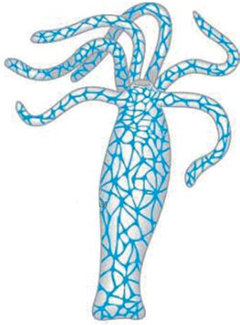
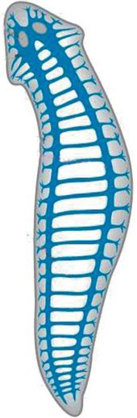
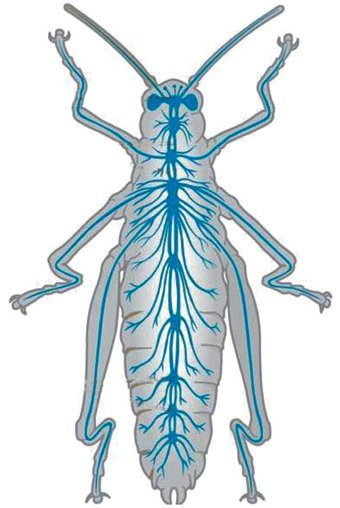
ജീവശാസ്ത്രം - X
ഹൈഡ്ര
പ്ലനേറിയ
ഷഡ്പദങ്ങള്
നിയന്ത്രണകേന്ദ്രമി തലയുടെ ഭാഗത്തു തലയുടെ ഭാഗത്തുള്ള നാഡീകോോശങ്ങള് കൂടി ല്ലാത്ത നാഡീജാലിക ള്ള ഒരു ജോോഡി ച്ചേര്ന്ന് വ്യയക്തവും സാമാന്യം വികാസം പ്രാ കാണപ്പെടുന്നു. നാഡീഗാംഗ്ലിയകള് പിച്ചതുമായ മസ്തിഷ്കമായി പരിണമിച്ചിരിക്കു നിർദേശങ്ങളെ ന്നു. ഇതിൽനിന്നും പുറപ്പെടുന്ന ഒരു ജോോഡി ഏകോോപിപ്പിക്കുന്നു നാഡീതന്തുക്കളിലെ ഗാംഗ്ലിയോോണുകള് ഓരോോ അറയിലും കാണപ്പെടുന്നു. ചിത്രീകരണം
2.19 വിവിധ ജീവികളിലെ നാഡീവ്യയവസ്ഥ
സൂചകങ്ങൾ y ഹൈഡ്രയിലെയും പ്ലനേറിയയിലെയും നാഡീവ്യയവസ്ഥ താരതമ്യംം ചെയ്യുക. y ഷഡ്പദങ്ങളിലെ നാഡീവ്യയവസ്ഥയുടെ പ്രത്യേേകത. ലഘുഘടനയുള്ള ഏകകോോശ ജീവികളിൽ നിന്ന് സങ്കീർണ്ണഘടനയുള്ള ബഹുകോോശ ജീവികള് ആവിര്ഭവിച്ച ദീർഘകാല പ്രക്രിയയാണല്ലോോ ജീവപരിണാമം. ലളിതമായ നാഡീഘടനയില് നിന്ന് വളരെ സങ്കീർണ്ണമായ നാഡീവ്യയവസ്ഥകളിലേക്കുള്ള ശ്രദ്ധേയമായ പരിവർത്തനം കൂടി ജീവപരിണാമം നല്കുന്നുണ്ട്. വൈവിധ്യയമാർന്ന ചുറ്റുപാടുകളുമായി ജീവികളെ പൊൊരുത്തപ്പെ ടുത്തുന്നതിനും അവയുടെ നിലനിൽപ്പിനും നാഡീവ്യയവസ്ഥയുടെ ഈ പരിണാമം കാരണമായി. മനുഷ്യയര്ക്ക് പ്രകൃതിയിൽ ആധിപത്യം സ്ഥാപിക്കുന്നതിനും സമാനതകളില്ലാത്ത വൈജ്ഞാനി കവും സാങ്കേതികവുമായ പുരോോഗതി പ്രാപ്തമാക്കുന്നതിനും നിർണായക പങ്ക് വഹിച്ചത് സങ്കീർ ണ്ണമായ മസ്തിഷ്ക വികാസമാണ്. ദീർഘകാല പരിണാമത്തിലൂടെ വികസിച്ച നിയോോകോോർട്ടക്സി ന്റെ സാന്നിധ്യയവും അതുവഴി സാധ്യയമായ ഭാഷ, ബുദ്ധി, സർഗാത്മകത തുടങ്ങിയ ഉന്നതമായ മാനസിക പ്രവർത്തനങ്ങളുമാണ് മനുഷ്യയരെ ഇതര ജീവികളിൽ നിന്ന് വ്യയത്യയസ്തരാക്കുന്നത്. നാഡീവ്യയവസ്ഥയുടെ പ്രവര്ത്തനം ചുറ്റുപാടുകളെ മനസ്സിലാക്കാനും അതിനനുസരിച്ച് പ്രതിക രിക്കാനും ജീവികളെ പ്രാപ്തമാക്കുന്നതിൽ നിർണ്ണായക പങ്ക് വഹിക്കുന്നുവെന്ന് മനസ്സിലാക്കിയ ല്ലോോ. ഇതിന്റെ പ്രവര്ത്തനം പൂര്ണ്ണവും സുഗമവും ആകണമെങ്കില് ബാഹ്യയ-ആന്തര പരിസ്ഥി തിയില് നിന്നുള്ള വിവരങ്ങള് കേന്ദ്രനാഡീവ്യയവസ്ഥയില് എത്തേണ്ടതുണ്ട്. ബാഹ്യയപരിസരത്ത് നിന്നുള്ള വിവരങ്ങള് ജ്ഞാനേന്ദ്രിയങ്ങളിലൂടെയാണ് സ്വീകരിക്കപ്പെടുന്നത്. ഇതരജീവികളെ അപേക്ഷിച്ച് മനുഷ്യയമസ്തിഷ്കം വികസിതമാണെങ്കിലും ആ മികവ് ജ്ഞാനേന്ദ്രിയങ്ങള്ക്കു ണ്ടോോ? ജ്ഞാനേന്ദ്രിയങ്ങളുംം മസ്തിഷ്കവും തമ്മിലുള്ള ബന്ധം വിശകലനം ചെയ്തുകൊൊണ്ട് മാത്രമേ അക്കാര്യംം വിലയിരുത്താനാവൂ. ജ്ഞാനേന്ദ്രിയങ്ങളുംം നാഡീവ്യയവസ്ഥയും ചേര്ന്ന് നല്കുന്ന ഇന്ദ്രിയാനുഭവങ്ങളുംം അറിയേണ്ടതുണ്ട്. അതിനുള്ള പഠനാവസരം തുടര്ന്നുള്ള അധ്യാായങ്ങളി ലൂടെ ലഭ്യയമാകുന്നതാണ്. 67


ജീവശാസ്ത്രം - X
വിലയിരുത്താം 1.
മനുഷ്യയപരിണാമവുമായി ബന്ധപ്പെട്ട 2 ചിത്രീകരണങ്ങള് ചുവടെ നല്കിയിരിക്കുന്നു. പ്രകൃ തിനിർധാരണ സിദ്ധാന്തത്തിന്റെ അടിസ്ഥാനത്തില് ഇവയില് നിന്നും ശരിയായത് കണ്ടെ ത്തി കാരണം വിശദീകരിക്കുക. കുരങ്ങ്
A
മനുഷ്യയർ
മനുഷ്യയർ
പൊൊതുപൂർവികൻ
കുരങ്ങ്
B
2. ഡോോൾഫിനുകൾക്ക് മനുഷ്യയരുടേതിനേക്കാൾ വലിയ മസ്തിഷ്കം ഉണ്ടെങ്കിലും, മനുഷ്യയർക്ക്
അവരെക്കാൾ ഉയർന്ന തലത്തിലുള്ള ചിന്താശേഷി, ഭാഷാ പ്രാവീണ്യം, സാമൂഹിക ബന്ധ ങ്ങൾ എന്നിവയുണ്ട്. ഈ പ്രസ്താവന താഴെപ്പറയുന്ന സൂചകങ്ങളുടെ അടിസ്ഥാനത്തില് വിലയിരുത്തുക. y y
മസ്തിഷ്ക ഘടനയിലെ വ്യയത്യാസം പ്രകൃതിനിർധാരണത്തിൻ്റെ സ്വാധീനം
3. നാഡീകോോശത്തിന്റെ ചിത്രം പകര്ത്തിവരച്ച് ചുവടെ നല്കിയിട്ടുള്ള ഭാഗങ്ങള് പേരെഴുതി
അടയാളപ്പെടുത്തുക.
(a) തൊൊട്ടടുത്ത നാഡീകോോശത്തില് നിന്നും സന്ദേശങ്ങള് സ്വീകരിക്കുന്ന ഭാഗം (b) ന്യൂറോോട്രാൻസ്മിറ്റർ അടങ്ങിയിരിക്കുന്ന ഭാഗം (c) ഇന്സുലേറ്ററായി പ്രവര്ത്തിക്കുന്ന ഭാഗം 4.
ജീവികളിൽ നിരന്തരമായി വ്യയതിയാനങ്ങൾ ഉണ്ടാകുന്നുവെന്ന് ഡാർവിൻ വാദിച്ചുവെങ്കി ലും ഈ വ്യയതിയാനങ്ങളുടെ കാരണങ്ങളെപ്പറ്റി വിശദീകരിക്കാൻ അദ്ദേഹത്തിനായില്ല. ഈ പ്രസ്താവന നിയോോഡാര്വിനിസത്തിലെ കണ്ടെത്തലുകളുടെ അടിസ്ഥാനത്തില് വിലയിരു ത്തുക. 68
ജീവശാസ്ത്രം - X 5. ചിത്രീകരണം നിരീക്ഷിച്ച് ചോോദ്യയങ്ങള്ക്ക് ഉത്തരമെഴുതുക A
കേന്ദ്രനാഡി വ്യയവസ്ഥ
B
ശരീരത്തിന്റെ വിവിധ ഭാഗങ്ങൾ
(a) A, B എന്നീ നാഡികള് തിരിച്ചറിയുക. (b) A, B എന്നിവ തമ്മില് സന്ദേശങ്ങള് പരസ്പരം കൈമാറുന്നുണ്ടോോ? വിശദീകരിക്കുക. 6.
സുഷുമ്നയുടെ ഭാഗങ്ങളുംം അവയുടെ ധമ്മവും ഉള്ക്കൊൊള്ളുന്ന പട്ടിക ചുവടെ നല്കിയിരി ക്കുന്നു. ഈ പട്ടികയിലെ കോോളം A ക്ക് അനുസരിച്ച് കോോളം B ഉചിതമായി ക്രമീകരിക്കുക. A ഭാഗം
B ധർമ്മം/സവിശേഷത
സെന്ട്രല് കനാല് മയലില് ഷീത്തുള്ള നാഡീകോോശങ്ങള് കൂടുതല് വൈറ്റ് മാറ്റര്
ആവേഗങ്ങളെ സുഷുമ്നയിലെത്തിക്കുന്നു
ഡോോര്സല് റൂട്ട്
ഇവിടെ കാണപ്പെടുന്ന ദ്രവം സുഷുമ്നക്ക് പോോഷണം നല്കുന്നു
ഗ്രേമാറ്റര്
ആവേഗങ്ങളെ ശരീരത്തിന്റെ വിവിധ ഭാഗങ്ങളിലെത്തിക്കുന്നു നാഡീകോോശങ്ങളുടെ കോോശശരീരം കൂടുതല്
7. ഫോോസിലുകളില് നിന്നും ലഭ്യയമായ വിവരങ്ങളുടെ അടിസ്ഥാനത്തില് ചില മനുഷ്യയ പൂർവി
കരുംം അവരുടെ പ്രത്യേേകതകളുംം ചുവടെ നല്കിയിരിക്കുന്നു. നല്കിയിട്ടുള്ള ഉത്തരങ്ങളി ല് നിന്നും ശരിയായി ക്രമീകരിച്ചിരിക്കുന്നത് കണ്ടെത്തുക. (A) ഹോോമോോ ഹബിലിസ്
(i) ശവശരീരങ്ങള് മറവു ചെയ്തിരുന്നു.
(B) ഹോോമോോ നിയാണ്ടർതാലൻസിസ്
(ii) ഇരുകാലുകളിൽ നിവർന്ന് നിൽക്കാൻ
(C) അസ്ട്രലോോപിത്തിക്കസ്
കഴിവുള്ളവർ.
(iii) കൈകള് ഉപയോോഗിച്ച് കല്ലുകള്
കൊൊണ്ടുള്ള ഉപകരണങ്ങള് നിര്മ്മിച്ചു. (D) ഹോോമോോ ഇറക്ടസ്
(iv) ഇരുകാലുകളിൽ നടത്തം സ്ഥിരീകരിക്കുന്ന
8.
അസ്ഥികൂടഘടന.
(a) A : i, B : ii, C : iii, D : iv
(b) A : iii, B : i, C : iv, D : ii
(c) A : iii, B : iv, C : ii, D : i
(d) A : iv, B : i, C : iii, D : ii
P, Q, R, S എന്നിങ്ങനെ സൂചിപ്പിച്ചിരിക്കുന്ന ബോോക്സിലെ വിവരങ്ങള് പരിശോോധിച്ച് അവ
യുമായി ബന്ധപ്പെട്ട മസ്തിഷ്കഭാഗം തിരിച്ചറിഞ്ഞ് ശരിയായി വരുന്ന ഉത്തരം തിരഞ്ഞെടു ക്കുക. 69

ജീവശാസ്ത്രം - X ആന്തര സമസ്ഥിതി പാലനം
ഇന്ദ്രിയാനുഭവ ങ്ങള് പ്രദാനം ചെയ്യുന്നു
ആവേഗങ്ങളുടെ പുന:പ്രസരണ കേന്ദ്രം
ശ്വാസോോഛ്വാസ നിരക്കിനെ നിയന്ത്രിക്കുന്നു
P
Q
R
S
(a) P - മെഡുല്ല ഒബ്ലോംംഗേറ്റ Q - പോോണ്സ് R - ഹൈപ്പോോതലാമസ് S - തലാമസ് (b) P - പോോണ്സ് Q - ഹൈപ്പോോതലാമസ് R - മെഡുല്ല ഒബ്ലോംംഗേറ്റ S - സെറിബ്രം (c) P - ഹൈപ്പോോതലാമസ് Q - സെറിബ്രം R - തലാമസ് S - പോോണ്സ് (d) P - തലാമസ് Q - സെറിബ്രം R - ഹൈപ്പോോതലാമസ് S - മെഡുല്ല ഒബ്ലോംംഗേറ്റ 9. ചുവടെ നല്കിയിട്ടുള്ളവയെ ഉചിതമായ കോോളത്തില് ഉള്പ്പെടുത്തി പട്ടിക പൂര്ത്തിയാ
ക്കുക. y കഴുത്തിന് നീളമുള്ള ജിറാഫുകൾ മാത്രം നിലനിൽക്കുന്നു y ഉപയോോഗവും നിരുപയോോഗവും y പ്രകൃതിനിർധാരണം y ജീവിതകാലയളവില് ആര്ജിക്കുന്ന വ്യയതിയാനങ്ങള് y നിരന്തരമായ ഉപയോോഗത്തിലൂടെ ജിറാഫിന്റെ കഴുത്തിന് നീളം കൂടുന്നു y വ്യയതിയാനങ്ങളുടെ പാരമ്പര്യയ പ്രേഷണം. ലാമാർക്കിസം
ഡാർവിനിസം
y
y
y
y
തുടര്പ്രവര്ത്തനങ്ങള് 1.
പരമാവധി ജീവികളെ ഉള്പ്പെടുത്തി മനുഷ്യയന്റെ പരിണാമവൃക്ഷം തയ്യാറാക്കി ക്ലാസില് പ്രദര്ശിപ്പിക്കൂ.
2.
ഭൂമിയില് ജീവന്റെ ഉല്പത്തി മാത്രമല്ല കൂട്ടവംശനാശങ്ങളുംം സംഭവിച്ചിട്ടുണ്ട്. ഇവയെപ്പറ്റി കൂടുതല് വിവരശേഖരണം നടത്തി സെമിനാര് സംഘടിപ്പിക്കൂ.
3.
നാഡീവ്യയവസ്ഥയുടെ സംരക്ഷണം വ്യയക്തമാക്കുന്ന ലഘുനാടകത്തിന്റെ സ്ക്രിപ്റ്റ് തയ്യാറാ ക്കി സ്കൂളിലും പൊൊതു ഇടങ്ങളിലും അവതരിപ്പിക്കൂ.
4.
വിവിധ നിറത്തിലുള്ള മുത്തുകള്, ചെറിയ കമ്പികൾ, വൂളന് നൂല് മുതലായവ ഉപയോോഗി ച്ച് നാഡീകോോശത്തിന്റെ മാതൃക നിർമ്മിച്ച് ക്ലാസില് പ്രദര്ശിപ്പിക്കൂ.
5.
നിർമ്മിതബുദ്ധി മനുഷ്യയമസ്തിഷ്ക്കത്തിന് വെല്ലുവിളിയോോ? ഈ വിഷയത്തിൽ ഒരു സംവാദം സംഘടിപ്പിക്കൂ. 70